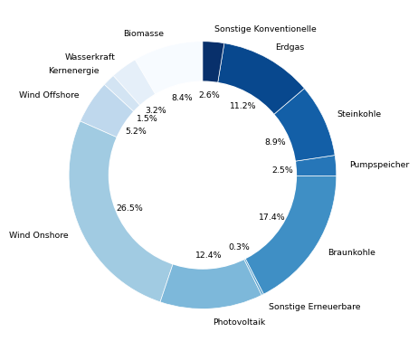
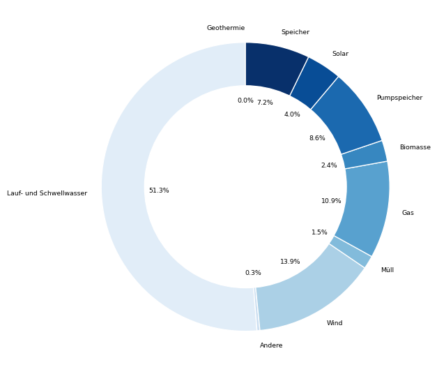
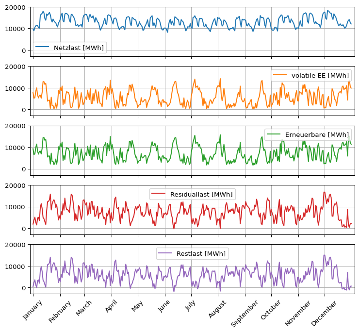
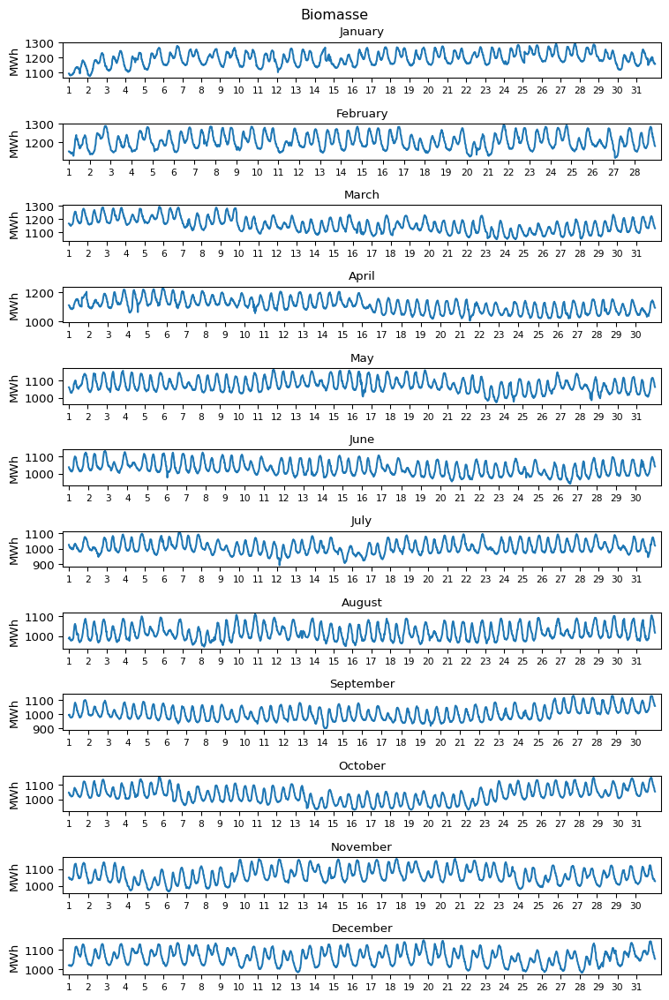
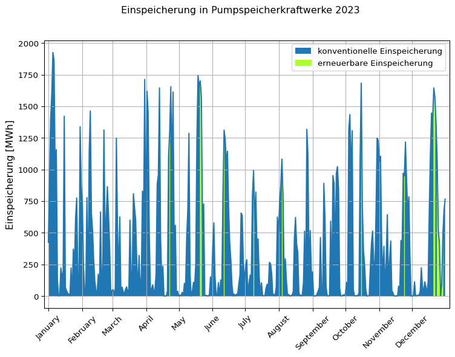
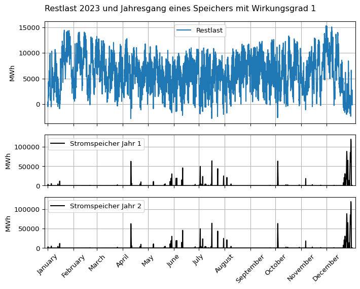
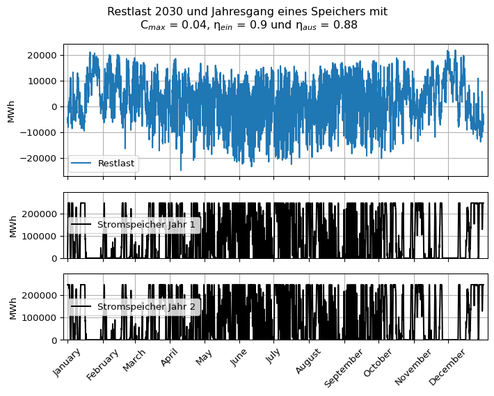

import pandas as pd
pd.set_option("display.precision", 2) # number of decimal places
import numpy as np
import matplotlib.pyplot as plt
installed_capacity_df = pd.read_csv(filepath_or_buffer = \
"01-daten/Installierte_Erzeugungsleistung_202301010000_202401010000_Jahr.csv", \
sep = ";", thousands = ".", decimal = ",", \
parse_dates = [0, 1], date_format = "%d.%m.%Y")
generation_df = pd.read_csv(filepath_or_buffer = \
"01-daten/Realisierte_Erzeugung_202301010000_202401010000_Viertelstunde.csv", \
sep = ";", thousands = ".", decimal = ",", \
parse_dates = [0, 1], date_format = "%d.%m.%Y %H:%M")
consumption_df = pd.read_csv(filepath_or_buffer = \
"01-daten/Realisierter_Stromverbrauch_202301010000_202401010000_Viertelstunde.csv", \
sep = ";", thousands = ".", decimal = ",", \
parse_dates = [0, 1], date_format = "%d.%m.%Y %H:%M")1 Energy Data Analysis
2 Background
Electric power is generated in power plants and transported via the power grid to electricity consumers. Power generation and consumption must always be balanced. The share of weather-dependent renewable generation is increasing, but electricity cannot yet be stored economically on a large scale. In 2023, pumped-storage power plants in Germany, with a capacity of 37.4 GWh (Heimerl und Kohler 2017, p. 77), fed in 11.1 TWh of electricity, which corresponded to 2.4 percent of Germany’s total electricity consumption of 458.3 TWh (Fraunhofer Institut für Solare Energiesysteme ISE o. J.). Power plant scheduling and storage sizing based on generation and consumption data is therefore a relevant application area for data analysis.
The Federal Network Agency publishes, among other things, data on electricity generation, consumption, and wholesale prices on https://www.smard.de/. (Note: Power plant data is available for generation units with an installed generation capacity of at least 100 MW.)
3 Reading the data
The electricity market data from the Federal Network Agency must be manually downloaded from https://www.smard.de/. In this script, data for the year 2023 is used.
| Data | File name |
|---|---|
| Installed generation capacity 2023 | Installierte_Erzeugungsleistung_202301010000_202401010000_Jahr.csv |
| Realized electricity generation 2023 | Realisierte_Erzeugung_202301010000_202401010000_Viertelstunde.csv |
| Realized electricity consumption 2023 | Realisierter_Stromverbrauch_202301010000_202401010000_Viertelstunde.csv |
Hinweis 3.1: Download SMARD data
When selecting the time period, click “Accept”.
Select data for installed capacity in the original resolution (annual basis).


The date format of the files depends on the language set on the website (German/English).
The semicolon-separated files are read as a DataFrame using the Python pandas module, which is imported with the alias pd. For this, the function pd.read_csv() is used. In this process:
The value, thousands, and decimal separators are specified.
sep = ";", thousands = ".", decimal = ","The columns with date and time information and the date format are defined.
parse_dates = [0, 1], date_format = "%d.%m.%Y %H:%M"
Take a look at the string used to specify the date format: "%d.%m.%Y %H:%M". Using the documentation, can you determine what format the dates in the file use? What would be the format for April 14, 2023, at a quarter past two in the afternoon?
Tipp 3.1: Date format solution
| Code | Meaning |
|---|---|
| %d. | Day as a two-digit integer with separator “.” |
| %m. | Month (possibly with leading zero) with separator “.” |
| %Y | Year as a four-digit integer with separator ” ” |
| %H: | Hour as a two-digit integer with separator “:” |
| %M | Minute as a two-digit integer |
Solution: 14.04.2023 14:15
4 Organizing Data
Before data analysis, it should be checked whether the data has been correctly loaded. This means, on the one hand, verifying if the data type of all columns has been correctly recognized. You can check whether the column types of a file have been correctly loaded in Python with the command df.dtypes. Here is the output of this command for the DataFrame generation_df.
print(f"Columns:\n{generation_df.dtypes}")Columns:
Datum von datetime64[ns]
Datum bis datetime64[ns]
Biomasse [MWh] Originalauflösungen float64
Wasserkraft [MWh] Originalauflösungen float64
Wind Offshore [MWh] Originalauflösungen float64
Wind Onshore [MWh] Originalauflösungen float64
Photovoltaik [MWh] Originalauflösungen float64
Sonstige Erneuerbare [MWh] Originalauflösungen float64
Kernenergie [MWh] Originalauflösungen float64
Braunkohle [MWh] Originalauflösungen float64
Steinkohle [MWh] Originalauflösungen float64
Erdgas [MWh] Originalauflösungen float64
Pumpspeicher [MWh] Originalauflösungen float64
Sonstige Konventionelle [MWh] Originalauflösungen float64
dtype: object
Many of the column names contain the string ” Originalauflösungen” which can be removed for clarity (note the leading space). In this way, the unit indication [MWh] could also be removed if found distracting.
# Remove the string " Originalauflösungen"
installed_capacity_df.columns = installed_capacity_df.columns.str.replace(pat = " Originalauflösungen", repl = "")
generation_df.columns = generation_df.columns.str.replace(pat = " Originalauflösungen", repl = "")
print(f"Columns:\n{generation_df.dtypes}")
consumption_df.columns = consumption_df.columns.str.replace(pat = " Originalauflösungen", repl = "")Columns:
Datum von datetime64[ns]
Datum bis datetime64[ns]
Biomasse [MWh] float64
Wasserkraft [MWh] float64
Wind Offshore [MWh] float64
Wind Onshore [MWh] float64
Photovoltaik [MWh] float64
Sonstige Erneuerbare [MWh] float64
Kernenergie [MWh] float64
Braunkohle [MWh] float64
Steinkohle [MWh] float64
Erdgas [MWh] float64
Pumpspeicher [MWh] float64
Sonstige Konventionelle [MWh] float64
dtype: object
On the other hand, the loaded data should be inspected to identify errors such as conversion problems with decimal and thousand separators, date formats, an unexpected number of missing values, or other anomalies. For this purpose, not only the first rows of the dataset but also slices from the middle and the end should be checked. The command pd.concat([a, b, c]) is useful for this, where a list of index ranges can be passed (see the second and third tabs in the following panel).
# The DataFrame installed_capacity_df has only 1 row
installed_capacity_df| Datum von | Datum bis | Biomasse [MW] | Wasserkraft [MW] | Wind Offshore [MW] | Wind Onshore [MW] | Photovoltaik [MW] | Sonstige Erneuerbare [MW] | Kernenergie [MW] | Braunkohle [MW] | Steinkohle [MW] | Erdgas [MW] | Pumpspeicher [MW] | Sonstige Konventionelle [MW] | |
|---|---|---|---|---|---|---|---|---|---|---|---|---|---|---|
| 0 | 2023-01-01 | 2024-01-01 | 8467.0 | 5049.0 | 8129.0 | 57590.0 | 63066.0 | 440.0 | 4056.0 | 17692.0 | 18127.0 | 31808.0 | 9379.0 | 8958.0 |
pd.concat([generation_df.head(2), \
generation_df.iloc[len(generation_df)//2:(len(generation_df)//2+2)], \
generation_df.tail(2)])| Datum von | Datum bis | Biomasse [MWh] | Wasserkraft [MWh] | Wind Offshore [MWh] | Wind Onshore [MWh] | Photovoltaik [MWh] | Sonstige Erneuerbare [MWh] | Kernenergie [MWh] | Braunkohle [MWh] | Steinkohle [MWh] | Erdgas [MWh] | Pumpspeicher [MWh] | Sonstige Konventionelle [MWh] | |
|---|---|---|---|---|---|---|---|---|---|---|---|---|---|---|
| 0 | 2023-01-01 00:00:00 | 2023-01-01 00:15:00 | 1094.25 | 320.0 | 684.25 | 7145.75 | 0.50 | 32.25 | 615.25 | 962.75 | 517.00 | 429.75 | 13.50 | 307.25 |
| 1 | 2023-01-01 00:15:00 | 2023-01-01 00:30:00 | 1091.25 | 317.5 | 743.50 | 7158.25 | 0.25 | 32.25 | 614.75 | 963.25 | 518.00 | 429.50 | 9.75 | 307.25 |
| 17520 | 2023-07-02 13:00:00 | 2023-07-02 13:15:00 | 955.25 | 317.5 | 736.00 | 4228.50 | 6832.75 | 25.25 | 0.00 | 795.00 | 216.75 | 546.00 | 0.75 | 264.75 |
| 17521 | 2023-07-02 13:15:00 | 2023-07-02 13:30:00 | 956.75 | 321.5 | 693.75 | 3885.25 | 6961.25 | 25.25 | 0.00 | 791.00 | 215.00 | 545.00 | 0.00 | 266.00 |
| 35038 | 2023-12-31 23:30:00 | 2023-12-31 23:45:00 | 1053.25 | 412.5 | 1479.25 | 7544.25 | 0.50 | 24.00 | 0.00 | 845.25 | 444.50 | 683.00 | 122.75 | 348.50 |
| 35039 | 2023-12-31 23:45:00 | 2024-01-01 00:00:00 | 1051.50 | 404.0 | 1469.00 | 7480.50 | 0.50 | 24.00 | 0.00 | 840.75 | 442.25 | 679.00 | 58.25 | 348.00 |
pd.concat([consumption_df.head(2), \
consumption_df.iloc[len(consumption_df)//2:(len(consumption_df)//2+2)], \
consumption_df.tail(2)])| Datum von | Datum bis | Gesamt (Netzlast) [MWh] | Residuallast [MWh] | Pumpspeicher [MWh] | |
|---|---|---|---|---|---|
| 0 | 2023-01-01 00:00:00 | 2023-01-01 00:15:00 | 9720.75 | 1890.25 | 424.75 |
| 1 | 2023-01-01 00:15:00 | 2023-01-01 00:30:00 | 9641.25 | 1739.25 | 443.50 |
| 17520 | 2023-07-02 13:00:00 | 2023-07-02 13:15:00 | 11564.00 | -233.25 | 1147.75 |
| 17521 | 2023-07-02 13:15:00 | 2023-07-02 13:30:00 | 11536.25 | -4.00 | 1223.25 |
| 35038 | 2023-12-31 23:30:00 | 2023-12-31 23:45:00 | 10495.75 | 1471.75 | 470.00 |
| 35039 | 2023-12-31 23:45:00 | 2024-01-01 00:00:00 | 10289.25 | 1339.25 | 528.00 |
Finally, a plausibility check of the data is advisable. At the beginning, the total electricity consumption in Germany for 2023 was mentioned as 458.3 TWh. The electricity consumption and the sum of electricity generation should approximately correspond to this value.
# exclude columns with datetime
print("Electricity consumption in million MWh:\n", \
consumption_df.sum(numeric_only = True) // (1000 * 1000), sep = "")
print("\nElectricity generation in million MWh", \
generation_df.sum(numeric_only = True).sum() // (1000 * 1000))Electricity consumption in million MWh:
Gesamt (Netzlast) [MWh] 458.0
Residuallast [MWh] 260.0
Pumpspeicher [MWh] 14.0
dtype: float64
Electricity generation in million MWh 448.0
If all files have been correctly loaded, working copies can be created with the command df.copy(). This way, the raw data remains always available and can be reloaded if necessary, for example, after accidentally overwriting the working copies.
generation = generation_df.copy()
consumption = consumption_df.copy()
installed_capacity = installed_capacity_df.copy()5 Descriptive Data Analysis
With methods of descriptive statistics, an overview of the datasets and the data can be obtained. This step is particularly useful for identifying possible errors and anomalies in the dataset. The findings obtained here can be explored in greater depth in the subsequent exploratory and inferential data analysis.
An initial overview of the data is provided by the method pd.DataFrame.describe(), which describes the distribution of the data. By using the argument include = [np.number], the output can be restricted to columns with numerical data, meaning that columns with date information are excluded.
print(f"The DataFrame 'generation' has {generation.shape[0]} rows and {generation.shape[1]} columns.\n")
generation.describe(include = [np.number])The DataFrame 'generation' has 35040 rows and 14 columns.
| Biomasse [MWh] | Wasserkraft [MWh] | Wind Offshore [MWh] | Wind Onshore [MWh] | Photovoltaik [MWh] | Sonstige Erneuerbare [MWh] | Kernenergie [MWh] | Braunkohle [MWh] | Steinkohle [MWh] | Erdgas [MWh] | Pumpspeicher [MWh] | Sonstige Konventionelle [MWh] | |
|---|---|---|---|---|---|---|---|---|---|---|---|---|
| count | 35040.00 | 35040.00 | 35040.00 | 35040.00 | 35040.00 | 35040.00 | 35040.00 | 35040.00 | 35040.00 | 35040.00 | 35040.00 | 35040.00 |
| mean | 1079.50 | 411.50 | 671.23 | 3389.91 | 1590.11 | 33.32 | 192.37 | 2221.58 | 1134.42 | 1431.02 | 318.19 | 330.81 |
| std | 80.16 | 83.08 | 457.65 | 2627.46 | 2470.00 | 7.69 | 305.80 | 939.80 | 838.85 | 682.72 | 425.94 | 39.99 |
| min | 892.50 | 249.75 | 0.00 | 30.25 | 0.25 | 21.75 | 0.00 | 634.25 | 170.25 | 373.00 | 0.00 | 208.50 |
| 25% | 1017.50 | 334.00 | 259.00 | 1237.25 | 0.50 | 25.50 | 0.00 | 1396.25 | 506.75 | 893.25 | 38.00 | 304.50 |
| 50% | 1066.75 | 420.50 | 612.25 | 2657.00 | 24.88 | 32.50 | 0.00 | 2111.25 | 814.75 | 1300.00 | 110.75 | 337.00 |
| 75% | 1133.25 | 481.00 | 1040.56 | 5017.19 | 2466.50 | 39.25 | 535.00 | 3000.31 | 1501.00 | 1810.75 | 443.00 | 356.00 |
| max | 1293.25 | 618.25 | 1910.00 | 12039.50 | 10361.25 | 51.25 | 771.00 | 4121.75 | 3814.00 | 4169.25 | 2399.00 | 512.50 |
From the descriptive statistics of the data, it can be seen, for example, that onshore wind contributed the largest share to electricity generation. It is also noticeable that neither onshore wind nor photovoltaics have a minimum generation value of 0, whereas this is the case for offshore wind and nuclear energy.
5.1 Visualization
Analyzing the descriptive statistics for 12 different types of generation requires focus. Complex information should therefore be presented graphically.
For a quick overview, for example of the distribution of total generation capacity by generation type, a pie or donut chart is useful. However, as explained in the Statistics Basics Module (Chapter 2: Single Variables), this type of chart has the drawback that with an increasing number of categories (or characteristics to be displayed), it quickly becomes cluttered and the angles become difficult to read accurately.
In the following donut chart created using the method pd.DataFrame.plot.pie(), two adjustments were made: first, the automatic annotation of the percentage values was enabled using the format string autopct='%1.1f%%'. Second, the order of the columns in the DataFrame was swapped because otherwise the percentage labels and the labels of smaller slices overlap. Additionally, the substring ” [MWh]” was removed from the column names for the slice labels. While this improves the readability of the chart, this is not the main reason why the substring was removed.
What do you think is the reason for this?
Tipp 5.1: Pie Chart Solution
A pie or donut chart represents proportions and is therefore dimensionless.
You can find the details of the plot creation in the second tab.

# plot the pie first try - Other Erneuerbare [MWh] overlaps with Kernenergie [MWh] and Pumpspeicher [MWh]
# generation.sum(numeric_only = True).plot.pie(colormap = "Blues", startangle = 90, rotatelabels = True, explode = explosion)
# rearrange columns, remove " [MWh]"
plotting_data = generation.copy()
column_to_move = plotting_data.pop("Kernenergie [MWh]")
plotting_data.insert(4, "Kernenergie [MWh]", column_to_move)
column_to_move = plotting_data.pop("Pumpspeicher [MWh]")
plotting_data.insert(10, "Pumpspeicher [MWh]", column_to_move)
plotting_data.columns = plotting_data.columns.str.replace(pat = " [MWh]", repl = "")
# plot the pie
ax = plotting_data.sum(numeric_only = True).plot.pie(colormap = "Blues", startangle = 90, rotatelabels = False, autopct='%1.1f%%', pctdistance = 0.6, textprops = dict(size = 7, color = 'black'), wedgeprops = {"linewidth": 0.5, "edgecolor": "white"})
# make a donut
circle = plt.Circle((0, 0), radius = 0.7, color = "white")
ax.add_patch(circle)
plt.show()Aggregating Data
Due to the numerous features, the descriptive and visual representation of generation capacity does not necessarily yield a clear conclusion. One way to better understand the data is to group similar features together. In the following, renewable and conventional (fossil-fuel based) generation types are aggregated to display their share values in a donut chart. Both groups are also shown in a bar chart. The matplotlib.pyplot module is used for the visualization. Details of the plot creation can be found in the second tab.
![The graphic consists of three vertically stacked subplots. In the middle is a pie chart showing the shares of renewable energy generation (56%), conventional energy (40%), pumped storage (2.5%), and nuclear energy (1.5%). The pie segments are colored in shades of blue. Above is a horizontal bar chart showing absolute generation of renewable energies sorted ascending from bottom to top, starting with the lowest: Other Renewables, Hydropower, Offshore Wind, Biomass, Photovoltaics, Onshore Wind. Below is a horizontal bar chart showing absolute generation of conventional energy sorted ascending from bottom to top, starting with the lowest: Other Conventional, Hard Coal, Natural Gas, Lignite.](energiedatenanalyse_files/figure-html/cell-13-output-1.png)
# Define renewables and conventionals, sum each
## Renewables
plotting_data = generation.copy()
plotting_data.drop(columns = ['Datum von', 'Datum bis', 'Biomasse [MWh]', 'Wasserkraft [MWh]', 'Wind Offshore [MWh]',
'Wind Onshore [MWh]', 'Photovoltaik [MWh]',
'Sonstige Erneuerbare [MWh]'], inplace = True) # drop date columns; inplace=False returns a copy and does nothing without assignment
renewables = ['Biomasse [MWh]', 'Wasserkraft [MWh]', 'Wind Offshore [MWh]', 'Wind Onshore [MWh]', 'Photovoltaik [MWh]',
'Sonstige Erneuerbare [MWh]']
plotting_data["Erneuerbare"] = generation[renewables].sum(axis = 'columns')
## Conventionals
plotting_data.drop(columns = ['Braunkohle [MWh]', 'Steinkohle [MWh]', 'Erdgas [MWh]', 'Sonstige Konventionelle [MWh]'], inplace = True)
conventionals = ['Braunkohle [MWh]', 'Steinkohle [MWh]', 'Erdgas [MWh]', 'Sonstige Konventionelle [MWh]']
plotting_data["Konventionelle"] = generation[conventionals].sum(axis = 'columns')
# rearrange columns, remove " [MWh]"
plotting_data = plotting_data[['Erneuerbare', 'Pumpspeicher [MWh]', 'Konventionelle', 'Kernenergie [MWh]']]
plotting_data.columns = plotting_data.columns.str.replace(pat = " [MWh]", repl = "")
# for checking - axis=columns sums columns row-wise
## print(renewables)
## print(generation[renewables].sum(axis = 'columns'))
## print(plotting_data.columns)
## print(plotting_data[0:3])
# create figure with three subplots
plt.figure(figsize = (7.5, 7.5))
nrows = 4
ncols = 2
font_size = 8
# value for shared x-axis on barplots
x_lim = generation.sum(numeric_only = True).max() * 1.1
# array of colors
my_colors = plt.get_cmap('Blues')(np.linspace(0.2, 1, len(plotting_data.sum())))
# plot the pie, use 4 out of 8 panels = middle 2 rows
ax = plt.subplot(nrows, ncols, (3, 6))
plt.pie(x = plotting_data.sum(), colors = my_colors, startangle = 350, labels = list(plotting_data.columns), autopct='%1.1f%%', pctdistance = 0.5, textprops = dict(size = font_size + 1), wedgeprops = {"linewidth": 0.5, "edgecolor": "white"})
# make a donut
circle = plt.Circle((0, 0), radius = 0.65, color = "white")
ax.add_patch(circle)
# top row unstacked barplot
plt.subplot(nrows, ncols, (1, 2))
generation[renewables].sum().sort_values(ascending = False).plot.barh(fontsize = font_size, xlim = (0, x_lim), color = my_colors[0], edgecolor = 'darkgrey')
plt.title("Renewables", fontsize = font_size + 2)
# bottom row unstacked barplot
plt.subplot(nrows, ncols, (7, 8))
generation[conventionals].sum().sort_values(ascending = False).plot.barh(fontsize = font_size, xlim = (0, x_lim), color = my_colors[2], edgecolor = 'darkgrey')
plt.title("Conventionals", fontsize = font_size + 2)
plt.tight_layout()
plt.show()By aggregating similar types of electricity generation, the donut chart has been reduced to four generation categories. The generation types with only small shares of total electricity generation, pumped storage and nuclear energy, therefore stand out clearly compared to the individual representation of all generation types. Based on this, it can be discussed whether the shown aggregation is appropriate. On one hand, nuclear energy could be assigned to the conventionals if this group is defined not by fossil fuel use but by the principle of thermal steam expansion. On the other hand, generation from pumped storage should be critically examined. This aspect is discussed in the following section.
Hinweis 5.1: Note
Complex graphics, like the one shown here, should generally be used sparingly because they can be difficult to understand and interpret. Therefore, the purpose of the graphic and the key conclusions should be clearly explained in the text.
Tip: Imagine you were showing the graphic spontaneously to a friend who hasn’t read your work. How would you explain the graphic to your friend? Write this explanation in your report.
Generation, Storage, Injection
Pumped-storage power plants are energy storage systems that do not produce primary energy but store electricity generated by other producers and feed it back into the grid when needed. Which producers supplied electricity to fill the pumped storage is analyzed in Kapitel 6. The realized grid feed-in of pumped-storage plants corresponds to the energy production of other power plants reduced by the losses incurred during charging and discharging (as well as any storage losses such as evaporation or seepage). The efficiency of pumped-storage power plants can be calculated using the available data for the year 2023.
What was the efficiency of the pumped-storage power plants in 2023?
Tipp 5.2: Solution: Pumped Storage Efficiency
print(f"Total Generation Pumped Storage: {generation['Pumpspeicher [MWh]'].sum():,.2f}\n"
f"Total Consumption Pumped Storage: {consumption['Pumpspeicher [MWh]'].sum():,.2f}\n"
f"{41 * '='}\n"
f"Efficiency in Percent: \t\t\t{(generation['Pumpspeicher [MWh]'].sum() / consumption['Pumpspeicher [MWh]'].sum()) * 100:,.2f}")Total Generation Pumped Storage: 11,149,398.50
Total Consumption Pumped Storage: 14,095,632.75
=========================================
Efficiency in Percent: 79.10The actually realized electricity generation is therefore the cumulative electricity generation of the pumped-storage power plants published by the Federal Network Agency, plus the storage losses. The Federal Network Agency includes this value in the electricity consumption dataset. The following code uses the “walrus” operator :=, which allows assignments within expressions (here within the print statement). This makes the code more concise (although readability decreases). Assignments made using the walrus operator must be enclosed in parentheses:
print(f"Storage losses:\t\t\t{(storage_losses := (consumption["Pumpspeicher [MWh]"].sum() - generation["Pumpspeicher [MWh]"].sum()) / (1000 * 1000)):>6.2f} TWh\n"
f"Cumulative electricity generation:\t{(cumulative_generation := generation.sum(numeric_only=True).sum() // (1000 * 1000)):,.2f} TWh\n"
f"Total:\t\t\t\t\t\t{storage_losses + cumulative_generation:,.2f} TWh\n\n")Storage losses: 2.95 TWh
Cumulative electricity generation: 448.00 TWh
Total: 450.95 TWh
The difference between the actual realized and the electricity generation published by the Federal Network Agency amounts to just under 3 TWh, which is less than 1 percent of the total electricity generation. In other countries, the correct allocation of data is also materially significant. In Austria, pumped-storage power plants play an important role in the electricity mix.
5.2 Task: Descriptive Data Analysis

View of the Schlegeisspeicher from Höhenweg. Photo by Klaus Kettner is licensed under CC BY-SA 3.0 and available on Wikimedia. The image was cropped and saved in PNG format. 2012.
Similar to the Federal Network Agency, the Austrian Power Grid AG (APG) publishes electricity market data at https://markttransparenz.apg.at/. Generation data for the year 2023 can be downloaded via this link.
The following file is attached to this script.
| Data | Filename |
|---|---|
| Realized Electricity Generation 2023 | AGPT_2022-12-31T23_00_00Z_2023-12-31T23_00_00Z_15M_en_2024-06-10T09_32_38Z.csv |
Load the Austrian generation data and visualize the shares of generation types. What do you notice in the dataset?
Hinweis 5.2: Download Austria Market Transparency Data
After selecting the time period, click Export, then the Download button will appear.


The date format of the files depends on the language setting on the website (German/English).
Tipp 5.3: Tip for Generation Data and Sample Solution
The Austrian dataset differs in that it reports power (capacity) instead of generated energy. (This does not affect the visualization of generation shares.) The dataset also differs in another aspect.
Tip: If not all columns appear in the output of the .describe() method, try printing the DataFrame in two or more parts. For example:
print(df.iloc[:, 0:5].describe(include=np.number))
print(df.iloc[:, 5:10].describe(include=np.number))
print(df.iloc[:, 10:15].describe(include=np.number))
TippMusterlösung Strommarktdaten Österreich
import pandas as pd
import numpy as np
import matplotlib.pyplot as plt
# Set decimal precision for display
pd.set_option("display.precision", 2)
# Load dataset into variable generation0
# !
# Adjust the file path to the correct location of the downloaded .csv file for your own use.
# !
generation0_austria_ms = pd.read_csv("01-daten/AGPT_2022-12-31T23_00_00Z_2023-12-31T23_00_00Z_15M_de_2024-06-10T09_32_38Z.csv",
sep = ";", thousands = ".", decimal = ",", parse_dates = [0, 1], date_format = "%d.%m.%Y")
print(generation0_austria_ms.head(10))
print(f"The DataFrame generation0_austria_ms has {generation0_austria_ms.shape[0]} rows and {generation0_austria_ms.shape[1]} columns.")
# Brief summary statistics of dataset
print(generation0_austria_ms.describe(include=[np.number]))
# If the dataset has many columns, some may be truncated in output.
# Print descriptive stats in chunks if needed:
print(generation0_austria_ms.iloc[:, 0:5].describe(include=[np.number]))
print(generation0_austria_ms.iloc[:, 5:10].describe(include=[np.number]))
print(generation0_austria_ms.iloc[:, 10:15].describe(include=[np.number]))
# Create a copy of the dataset
generation_austria_ms_c = generation0_austria_ms.copy()
# Drop columns with time data
generation_austria_ms_c = generation_austria_ms_c.drop(columns=["Zeit von [CET/CEST]", "Zeit bis [CET/CEST]"])
print(generation_austria_ms_c.head(5))
# Remove the string " [MW]" from column names
generation_austria_ms_c.columns = generation_austria_ms_c.columns.str.replace(pat=" [MW]", repl="")
print(generation_austria_ms_c.head(5))
# Plausibility check: the .csv file in Excel shows that the "Pumpspeicher" column contains both positive and negative values.
# This is also visible in the .describe() output.
# Check for negative values in generation columns:
check_negative_values = (generation_austria_ms_c < 0).any().any()
if check_negative_values:
print("ERROR: Negative values detected in generation data.")
# Set negative values in "Pumpspeicher" column to 0
generation_austria_ms_c["Pumpspeicher"] = generation_austria_ms_c["Pumpspeicher"].clip(lower=0)
# Remove columns with a sum of zero
# Approach: drop any column where the sum of all values is zero
columns_to_drop = [col for col in generation_austria_ms_c.columns if generation_austria_ms_c[col].sum() == 0]
generation_austria_ms_c = generation_austria_ms_c.drop(columns=columns_to_drop)
print(generation_austria_ms_c.head(10))
# To improve readability of very small pie chart segments, rearrange columns:
# alternate between largest and smallest segment, second largest and second smallest, etc.
sorted_columns = generation_austria_ms_c.sum().sort_values().index
new_order = []
for i in range(len(sorted_columns) // 2):
new_order.append(sorted_columns[i])
new_order.append(sorted_columns[-(i + 1)])
# If odd number of columns, append the middle one last
if len(sorted_columns) % 2 != 0:
new_order.append(sorted_columns[len(sorted_columns) // 2])
generation_austria_ms_c = generation_austria_ms_c[new_order]
plt.figure(figsize=(7, 7))
pie_plot = generation_austria_ms_c.sum(numeric_only=True).plot.pie(
colormap="Blues",
startangle=90,
rotatelabels=False,
wedgeprops={"linewidth": 1, "edgecolor": "white"},
autopct='%1.1f%%',
pctdistance=0.6,
textprops=dict(size=7),
)
# Make a donut chart by adding a white circle at the center
circle = plt.Circle((0, 0), radius=0.7, color="white")
pie_plot.add_patch(circle)
plt.show() Zeit von [CET/CEST] Zeit bis [CET/CEST] Wind [MW] Solar [MW] \
0 01.01.2023 00:00:00 01.01.2023 00:15:00 1000.0 0.0
1 01.01.2023 00:15:00 01.01.2023 00:30:00 964.0 0.0
2 01.01.2023 00:30:00 01.01.2023 00:45:00 956.0 0.0
3 01.01.2023 00:45:00 01.01.2023 01:00:00 992.0 0.0
4 01.01.2023 01:00:00 01.01.2023 01:15:00 880.0 0.0
5 01.01.2023 01:15:00 01.01.2023 01:30:00 888.0 0.0
6 01.01.2023 01:30:00 01.01.2023 01:45:00 948.0 0.0
7 01.01.2023 01:45:00 01.01.2023 02:00:00 968.0 0.0
8 01.01.2023 02:00:00 01.01.2023 02:15:00 956.0 0.0
9 01.01.2023 02:15:00 01.01.2023 02:30:00 952.0 0.0
Biomasse [MW] Gas [MW] Kohle [MW] Öl [MW] Geothermie [MW] \
0 240.0 27.6 0.0 0.0 0.07
1 240.0 27.6 0.0 0.0 0.07
2 240.0 28.0 0.0 0.0 0.07
3 240.0 27.6 0.0 0.0 0.07
4 240.0 27.6 0.0 0.0 0.07
5 240.0 28.4 0.0 0.0 0.07
6 240.0 28.8 0.0 0.0 0.07
7 240.0 28.0 0.0 0.0 0.07
8 240.0 28.8 0.0 0.0 0.07
9 240.0 28.4 0.0 0.0 0.07
Pumpspeicher [MW] Lauf- und Schwellwasser [MW] Speicher [MW] \
0 -1404.8 2291.6 70.4
1 -1532.8 2283.2 66.8
2 -1544.4 2240.0 100.4
3 -1579.6 2199.6 77.6
4 -1590.8 2234.8 63.2
5 -1602.8 2229.2 73.6
6 -1572.0 2211.2 69.2
7 -1579.2 2194.8 70.8
8 -1649.6 2202.8 75.2
9 -1702.0 2172.4 65.6
Sonstige Erneuerbare [MW] Müll [MW] Andere [MW]
0 0.0 100.0 22.0
1 0.0 100.0 22.0
2 0.0 100.0 22.0
3 0.0 100.0 22.0
4 0.0 100.0 22.0
5 0.0 100.0 22.0
6 0.0 100.0 22.0
7 0.0 100.0 22.0
8 0.0 100.0 22.0
9 0.0 100.0 22.0
The DataFrame generation0_austria_ms has 35040 rows and 15 columns.
Wind [MW] Solar [MW] Biomasse [MW] Gas [MW] Kohle [MW] Öl [MW] \
count 35040.00 35040.00 35040.00 35040.00 35040.0 35040.0
mean 942.84 268.01 159.94 736.68 0.0 0.0
std 884.56 421.28 64.30 799.65 0.0 0.0
min 4.00 0.00 52.00 0.00 0.0 0.0
25% 204.00 0.00 100.00 0.40 0.0 0.0
50% 644.00 20.00 156.00 472.00 0.0 0.0
75% 1484.00 392.00 216.00 1273.60 0.0 0.0
max 3400.00 2028.00 312.00 3599.60 0.0 0.0
Geothermie [MW] Pumpspeicher [MW] Lauf- und Schwellwasser [MW] \
count 3.50e+04 35040.00 35040.00
mean 7.20e-02 283.53 3477.12
std 1.39e-17 1101.68 1032.45
min 7.20e-02 -2082.80 1375.60
25% 7.20e-02 -451.20 2591.60
50% 7.20e-02 181.60 3516.00
75% 7.20e-02 1010.40 4131.20
max 7.20e-02 3160.80 6290.40
Speicher [MW] Sonstige Erneuerbare [MW] Müll [MW] Andere [MW]
count 35040.00 35040.0 35040.0 35040.0
mean 488.40 0.0 100.0 22.0
std 301.89 0.0 0.0 0.0
min 16.00 0.0 100.0 22.0
25% 248.00 0.0 100.0 22.0
50% 424.40 0.0 100.0 22.0
75% 686.00 0.0 100.0 22.0
max 1434.40 0.0 100.0 22.0
Wind [MW] Solar [MW] Biomasse [MW]
count 35040.00 35040.00 35040.00
mean 942.84 268.01 159.94
std 884.56 421.28 64.30
min 4.00 0.00 52.00
25% 204.00 0.00 100.00
50% 644.00 20.00 156.00
75% 1484.00 392.00 216.00
max 3400.00 2028.00 312.00
Gas [MW] Kohle [MW] Öl [MW] Geothermie [MW] Pumpspeicher [MW]
count 35040.00 35040.0 35040.0 3.50e+04 35040.00
mean 736.68 0.0 0.0 7.20e-02 283.53
std 799.65 0.0 0.0 1.39e-17 1101.68
min 0.00 0.0 0.0 7.20e-02 -2082.80
25% 0.40 0.0 0.0 7.20e-02 -451.20
50% 472.00 0.0 0.0 7.20e-02 181.60
75% 1273.60 0.0 0.0 7.20e-02 1010.40
max 3599.60 0.0 0.0 7.20e-02 3160.80
Lauf- und Schwellwasser [MW] Speicher [MW] Sonstige Erneuerbare [MW] \
count 35040.00 35040.00 35040.0
mean 3477.12 488.40 0.0
std 1032.45 301.89 0.0
min 1375.60 16.00 0.0
25% 2591.60 248.00 0.0
50% 3516.00 424.40 0.0
75% 4131.20 686.00 0.0
max 6290.40 1434.40 0.0
Müll [MW] Andere [MW]
count 35040.0 35040.0
mean 100.0 22.0
std 0.0 0.0
min 100.0 22.0
25% 100.0 22.0
50% 100.0 22.0
75% 100.0 22.0
max 100.0 22.0
Wind [MW] Solar [MW] Biomasse [MW] Gas [MW] Kohle [MW] Öl [MW] \
0 1000.0 0.0 240.0 27.6 0.0 0.0
1 964.0 0.0 240.0 27.6 0.0 0.0
2 956.0 0.0 240.0 28.0 0.0 0.0
3 992.0 0.0 240.0 27.6 0.0 0.0
4 880.0 0.0 240.0 27.6 0.0 0.0
Geothermie [MW] Pumpspeicher [MW] Lauf- und Schwellwasser [MW] \
0 0.07 -1404.8 2291.6
1 0.07 -1532.8 2283.2
2 0.07 -1544.4 2240.0
3 0.07 -1579.6 2199.6
4 0.07 -1590.8 2234.8
Speicher [MW] Sonstige Erneuerbare [MW] Müll [MW] Andere [MW]
0 70.4 0.0 100.0 22.0
1 66.8 0.0 100.0 22.0
2 100.4 0.0 100.0 22.0
3 77.6 0.0 100.0 22.0
4 63.2 0.0 100.0 22.0
Wind Solar Biomasse Gas Kohle Öl Geothermie Pumpspeicher \
0 1000.0 0.0 240.0 27.6 0.0 0.0 0.07 -1404.8
1 964.0 0.0 240.0 27.6 0.0 0.0 0.07 -1532.8
2 956.0 0.0 240.0 28.0 0.0 0.0 0.07 -1544.4
3 992.0 0.0 240.0 27.6 0.0 0.0 0.07 -1579.6
4 880.0 0.0 240.0 27.6 0.0 0.0 0.07 -1590.8
Lauf- und Schwellwasser Speicher Sonstige Erneuerbare Müll Andere
0 2291.6 70.4 0.0 100.0 22.0
1 2283.2 66.8 0.0 100.0 22.0
2 2240.0 100.4 0.0 100.0 22.0
3 2199.6 77.6 0.0 100.0 22.0
4 2234.8 63.2 0.0 100.0 22.0
ERROR: Negative values detected in generation data.
Wind Solar Biomasse Gas Geothermie Pumpspeicher \
0 1000.0 0.0 240.0 27.6 0.07 0.0
1 964.0 0.0 240.0 27.6 0.07 0.0
2 956.0 0.0 240.0 28.0 0.07 0.0
3 992.0 0.0 240.0 27.6 0.07 0.0
4 880.0 0.0 240.0 27.6 0.07 0.0
5 888.0 0.0 240.0 28.4 0.07 0.0
6 948.0 0.0 240.0 28.8 0.07 0.0
7 968.0 0.0 240.0 28.0 0.07 0.0
8 956.0 0.0 240.0 28.8 0.07 0.0
9 952.0 0.0 240.0 28.4 0.07 0.0
Lauf- und Schwellwasser Speicher Müll Andere
0 2291.6 70.4 100.0 22.0
1 2283.2 66.8 100.0 22.0
2 2240.0 100.4 100.0 22.0
3 2199.6 77.6 100.0 22.0
4 2234.8 63.2 100.0 22.0
5 2229.2 73.6 100.0 22.0
6 2211.2 69.2 100.0 22.0
7 2194.8 70.8 100.0 22.0
8 2202.8 75.2 100.0 22.0
9 2172.4 65.6 100.0 22.0 
Sample solution by Marc Sönnecken. For compatibility with this script, file paths and object names were adjusted. For accessibility, figure size and color palette were changed, a white inner circle added, and percentage labels repositioned.
6 Exploratory Data Analysis
Exploratory data analysis means asking questions about the available data and answering them using data analysis methods. The insights gained in this way can help refine the questions or generate new ones. It is therefore an iterative process, aimed primarily at gaining a deeper understanding of the data. (Wickham, Çetinkaya-Rundel, und Grolemund 2023, Kap. 10 Exploratory data analysis)
6.1 Background: Marginal Electricity Analysis
In the present case, the exploratory examination of the dataset is guided by the question of which producers supplied electricity to additionally fill the pumped storage facilities beyond meeting the grid demand. The aim is to determine which electricity producers, at the times when the pumped storage plants were being filled, were capable of providing additional output. This additional electricity can be referred to briefly as marginal electricity.
Definition 6.1: Marginal Electricity
Marginal analysis examines the conditions prevailing when producing or consuming an additional unit. This differs from an average analysis, which examines the effect of a change in quantity across all units. Marginal electricity refers to an additional unit of electricity.
For example, suppose the current electricity generation is 100 units, consisting of 60 units of solar power and, because solar production is insufficient, an additional 40 units of coal power. In this case, each unit of electricity contains, on average, 0.4 parts coal power. Now, if an additional 20 units of electricity are demanded, these must be supplied through additional coal-fired generation. In the average view, the electricity mix now consists of 60 units of solar power and 40 + 20 = 60 units of coal power. This changes the average coal share in electricity production from 0.4 to 0.5.
In the marginal view, the coal share of the additionally consumed electricity is 20 out of 20 units, i.e., 1.
6.2 Background: Priority Feed-in of Renewable Energy
In Germany, since the year 2000, the Renewable Energy Sources Act has been in effect, originally introduced as the Act on the Priority of Renewable Energy Sources Documentation and Information System for Parliamentary Materials. This act stipulated in § 3 the priority feed-in of renewable energies:
Obligation to Purchase and Remunerate
(1) Grid operators are obliged to connect installations for the generation of electricity according to § 2 to their grid, to purchase all electricity offered from these installations with priority, and to remunerate the fed-in electricity in accordance with §§ 4 to 8.
Act on the Priority of Renewable Energy Sources (Renewable Energy Sources Act – EEG) as well as amendments to the Energy Industry Act and the Mineral Oil Tax Act. Federal Law Gazette Year 2000 Part I No. 13, issued in Bonn on March 31, 2000. Federal Gazette
Producers classified as renewable energy have priority feed-in to the grid. According to the current version of the law, these are:
Hydropower, including wave, tidal, salinity gradient, and current energy,
Wind energy,
Solar radiation energy,
Geothermal energy,
Energy from biomass, including biogas, biomethane, landfill gas, and sewage gas, as well as from the biodegradable fraction of waste from households and industry
Act for the Expansion of Renewable Energy Sources (Renewable Energy Sources Act – EEG 2023). § 3 Definitions. https://www.gesetze-im-internet.de/eeg_2014/__3.html
Non-renewable producers operate in load-following mode to cover the residual load, i.e., the grid load minus the renewable generation output. This means that two scenarios can be distinguished:
Surplus of renewable energy: Electricity demand is fully met by renewable energy generation, and there is a generation surplus (or generators have been curtailed), which can serve additional electricity consumption.
Electricity mix from renewable feed-in and load-following non-renewable producers: Renewable energy sources feed in at full capacity, and the residual load and additional electricity consumption are met by non-renewable producers.
Which scenario applies in the power grid at a given moment can thus be determined by looking at the residual load.
6.3 Determine residual load and remaining load
The Federal Network Agency publishes, in its dataset on realized electricity consumption, the grid load, residual load, and electricity consumption by pumped storage power plants.
print(consumption.sum(numeric_only = True))Gesamt (Netzlast) [MWh] 4.58e+08
Residuallast [MWh] 2.60e+08
Pumpspeicher [MWh] 1.41e+07
dtype: float64
Definition 6.2: Residual Load
“Residual load […] corresponds to the total realized electricity consumption, minus the feed-in from photovoltaic, onshore wind, and offshore wind plants.” SMARD.de User Manual (p. 53)
The residual load not covered by renewable energies is the difference between electricity consumption and generation from renewable sources. Consequently, this residual load is smaller than the residual load published by the Federal Network Agency. Both residual load and this remaining load can be calculated from the difference between grid load and the corresponding renewable electricity generation.
renewables = ['Biomasse [MWh]', 'Wasserkraft [MWh]', 'Wind Offshore [MWh]', 'Wind Onshore [MWh]', 'Photovoltaik [MWh]', 'Sonstige Erneuerbare [MWh]']
PV_WindOnshore_WindOffshore = ['Wind Offshore [MWh]', 'Wind Onshore [MWh]', 'Photovoltaik [MWh]']
plotting_data = pd.DataFrame()
plotting_data["Netzlast [MWh]"] = consumption["Gesamt (Netzlast) [MWh]"].copy()
plotting_data["volatile EE [MWh]"] = generation[PV_WindOnshore_WindOffshore].sum(axis="columns").copy()
plotting_data["Erneuerbare [MWh]"] = generation[renewables].sum(axis="columns").copy()
plotting_data["Residuallast BNetzA [MWh]"] = consumption["Residuallast [MWh]"].copy()
plotting_data["Residuallast [MWh]"] = plotting_data["Netzlast [MWh]"] - plotting_data["volatile EE [MWh]"]
plotting_data["Restlast [MWh]"] = plotting_data["Netzlast [MWh]"] - plotting_data["Erneuerbare [MWh]"]
plotting_data.head()| Netzlast [MWh] | volatile EE [MWh] | Erneuerbare [MWh] | Residuallast BNetzA [MWh] | Residuallast [MWh] | Restlast [MWh] | |
|---|---|---|---|---|---|---|
| 0 | 9720.75 | 7830.50 | 9277.00 | 1890.25 | 1890.25 | 443.75 |
| 1 | 9641.25 | 7902.00 | 9343.00 | 1739.25 | 1739.25 | 298.25 |
| 2 | 9609.50 | 8119.50 | 9559.50 | 1490.00 | 1490.00 | 50.00 |
| 3 | 9565.00 | 7919.00 | 9362.25 | 1646.00 | 1646.00 | 202.75 |
| 4 | 9473.50 | 8107.75 | 9540.50 | 1365.75 | 1365.75 | -67.00 |
The residual load published by the Federal Network Agency Residual Load BNetzA [MWh] corresponds, based on the inspection of the first few rows, to the self-calculated residual load Residual Load [MWh]. Whether this holds true for the entire time series can be easily checked using the method pd.Series.equals(), which returns a boolean value, i.e., True or False.
plotting_data['Residuallast BNetzA [MWh]'].equals(plotting_data['Residuallast [MWh]'])TrueThis allows the redundant column to be removed.
plotting_data.drop(['Residuallast BNetzA [MWh]'], axis='columns', inplace=True)6.4 Visualizing the Annual Cycle
The network load, renewable energy generation, as well as the residual and remaining load should be visualized over the course of a year. For better clarity, only every 100th value will be plotted.

# Find position and content for x-axis labels
months = generation["Datum von"].dt.month.unique().tolist() # gives numbers 1-12
## using Pandas
months_index = generation[~generation["Datum von"].dt.month.duplicated()].index
month_names = generation["Datum von"].iloc[months_index].dt.strftime("%B")
## alternatively using a list operation
# months_index = []
# month_names = []
# for i in months:
# months_index.append(generation.index[generation["Datum von"].dt.month == i].min())
# month_names.append(generation["Datum von"].iloc[months_index[i - 1]].strftime("%B"))# plot every 100th value
plotting_data[::100].plot(figsize = (9, 8), subplots = True, sharey = True, xlim = (plotting_data.index.min() - (len(plotting_data.index) / 100), plotting_data.index.max() * 1.01), rot = 45, grid = True)
plt.ylim(top = 20000)
plt.minorticks_off()
plt.xticks(months_index, month_names);
plt.show()It can be observed that the grid load consistently remains above 9,000 MWh. Furthermore, the grid load fluctuates strongly on a monthly basis, reaching values of up to 19,000 MWh. Each month sees performance near the absolute minimum and maximum. In summer, the grid load is generally somewhat lower than in winter.
The electricity generation from renewable energy, shown in the second subplot (volatile RE [MWh]), is highly volatile. Periods of high production alternate with periods of low production, each lasting only a few days and at most two weeks. This is mainly due to electricity generation from photovoltaics and offshore/onshore wind, whose combined nationwide output in Germany often drops close to zero before reaching a (local) production maximum. In the third subplot (Renewables [MWh]), it can be seen that the additional feed-in from less volatile renewable sources such as biomass and hydropower is comparatively low. Therefore, while the total electricity generation summed across all renewable sources is never zero, it often reaches a low overall output. Nevertheless, there are also short periods of full renewable supply or surplus production, as can be seen from the annual curve of non-renewable residual load.
Regarding the question of the origin of the electricity stored in pumped-storage plants, the graphical representation already indicates that it was predominantly generated by non-renewable sources, as the residual load is rarely zero or negative.
The annual curve of the residual load mirrors the generation pattern of volatile renewable energy. This poses a challenge for conventional power plants. This aspect will be explored in more detail in the next section.
But first, a small task:
How would a doubling of renewable generation affect the residual load? Display the effect graphically in a comparable manner (e.g., by adding an extra column ‘Grid Load - 2x RE’).
Tipp 6.1: Sample Solution Doubling RE

plotting_data_2xRE = plotting_data.copy()
plotting_data_2xRE["2x EE"] = plotting_data_2xRE["Erneuerbare [MWh]"] * 2
plotting_data_2xRE["Netzlast - 2x EE"] = plotting_data_2xRE["Netzlast [MWh]"] - plotting_data_2xRE["2x EE"]
plotting_data_2xRE = plotting_data_2xRE[["Netzlast [MWh]", "Netzlast - 2x EE"]]
# plot every 100th value
plotting_data_2xRE[::100].plot(figsize=(9, 6), subplots=True, sharey=True,
xlim=(plotting_data_2xRE.index.min() - (len(plotting_data_2xRE.index)) / 100,
plotting_data_2xRE.index.max() * 1.01),
rot=45, grid=True)
plt.minorticks_off()
plt.xticks(months_index, month_names)
plt.show()The grid load minus the doubled renewable power generation approaches a symmetric distribution around the zero line. This means that periods of renewable overproduction and underproduction roughly balance each other out.
6.5 Background: Base, Medium, and Peak Load
Not all power plants are equally suitable for load-following operation due to technical or economic reasons. For example, coal-fired power plants are less flexibly controllable than gas-fired plants. Nuclear power plants are preferred for base load operation due to their high fixed and low variable costs. In the power grid, three operational profiles for power plants are distinguished: base load, medium load, and peak load.
Definition 6.3: Base, Medium, and Peak Load
Base load: The power continuously demanded throughout the year.
Plant types: Lignite, Nuclear, Run-of-river hydroMedium load: Power demanded beyond the base load, planable on a daily and yearly basis.
Plant types: Combined cycle gas plants, Hard coalPeak load: Power demanded beyond the medium load, only briefly or unexpectedly during the day or year.
Plant types: Gas turbines, Pumped-storage hydro
ISPEX AG: Base load, Medium load, Peak load
Grünwald, Reinhard / Caviezel, Claudio 2017: Load-following capability of German nuclear power plants. Monitoring. Office for Technology Assessment at the German Bundestag (TAB). doi: 10.5445/IR/1000102277. Page 16.
For the question of which power plants supply the marginal power for filling the pumped-storage hydro plants, the distinction between base-load plants on the one hand, and medium- and peak-load plants on the other hand, is particularly relevant. Base-load plants operate at full capacity 24 hours a day. For example, in 2021, nuclear energy reached nearly continuous full-load operation with 8,070 annual full-load hours statista. Plants running at full load can no longer respond to additional electricity demand. This is left to plants operating in medium and peak load.
Thus, by distinguishing between power plant types operating in base load and those in medium or peak load, one can narrow down which plant types supplied the electricity required to fill the pumped-storage plants.
The utilization of a power plant (or group of plants) can be quantified using its annual full-load hours.
Definition 6.4: Annual Full-Load Hours
The annual full-load hours indicate how many of the 8,760 hours in a year a power plant would need to operate at maximum capacity to produce its annual output. statista
\[ Annual~Full\text{-}Load~Hours~(h) = \frac{Total~electricity~generated~in~MWh}{Installed~capacity~in~MW} \]
The annual full-load hours can be calculated as follows. Applying the .sum method to the dataset installed_capacity is not necessary since it contains only one row. However, the .sum method allows you to exclude date columns using the parameter numeric_only = True.
# print(f"{generation.sum(numeric_only=True)}\n")
# print(installed_capacity.sum(numeric_only=True), "\n")
# For the division, indices need to be reset
full_load_hours_per_year = generation.sum(numeric_only=True).reset_index(drop=True).divide(installed_capacity.sum(numeric_only=True).reset_index(drop=True))
# Reset index
full_load_hours_per_year.index = generation.sum(numeric_only=True).index.str.replace(pat=" [MWh]", repl=" [h]")
print(f"\n\nFull load hours per year\n\n{full_load_hours_per_year.sort_values(ascending=False)}")
Full load hours per year
Biomasse [h] 4467.41
Braunkohle [h] 4399.96
Wind Offshore [h] 2893.34
Wasserkraft [h] 2855.83
Sonstige Erneuerbare [h] 2653.47
Steinkohle [h] 2192.86
Wind Onshore [h] 2062.55
Kernenergie [h] 1661.92
Erdgas [h] 1576.42
Sonstige Konventionelle [h] 1293.98
Pumpspeicher [h] 1188.76
Photovoltaik [h] 883.48
dtype: float64The calculation of annual operating hours shows that no type of power plant ran even close to full capacity. The highest utilization is observed for biomass and lignite. Biomass operated at full load for the equivalent of 51 percent of the 8,760 annual hours, while lignite did so for 50 percent. In contrast, the classic base-load generator, nuclear energy, reached only 25 percent. Hard coal, mainly used in Germany for mid-load operation, reached 19 percent. The year 2023 was particularly unusual for nuclear energy.
Therefore, the annual profile of selected conventional generators is presented. To achieve high resolution, a monthly representation is chosen.
plotting_data = generation.copy()
producer = "Kernenergie"
fig = plt.figure(figsize = (8, 12))
fig.suptitle(producer, fontsize = 12)
for i in range(1, 13):
plotting_data_monthly = plotting_data[plotting_data['Datum von'].dt.month == i]
ax = fig.add_subplot(12, 1, i)
ax.plot(plotting_data_monthly[producer + " [MWh]"])
plt.margins(x = 0.01)
ax.set_ylabel("MWh")
# Generate title
plt.title(plotting_data_monthly['Datum von'].head(1).dt.strftime('%B').item(), fontsize = 10)
# Generate xticks
day_index = plotting_data_monthly[~plotting_data_monthly['Datum von'].dt.day.duplicated()].index
day_names = plotting_data_monthly['Datum von'].dt.day.unique()
plt.xticks(day_index, day_names, fontsize = 8)
plt.tight_layout()
plt.show()


In the Nuclear Energy tab, it can be seen that in 2023 the last German nuclear power plants Emsland, Isar 2, and Neckarwestheim 2 were taken off the grid. In autumn 2022, due to the energy crisis, an extended stretch operation was decided for these plants beyond the original shutdown date of December 31, 2022. BMWK
Until which day was the stretch operation approved? Determine the shutdown date using the dataset generation. Output the shutdown time from the column 'Datum bis' in German date formatting DD. Month YYYY um HH:MM Uhr.
Tipp 6.3: Hint and Sample Solution
When the shutdown occurred, electricity production from nuclear energy reached the value 0. The shutdown was completed in the period preceding the first period in which nuclear power generation had the value 0.
You can format the output of a column as datetime using the method pandas.Series.dt.strftime.
Tipp 6.2: Sample Solution
In the graphical representation of the annual profile, only every 100th value was plotted, so it is possible that electricity generation reached zero before the final shutdown. Therefore, it is more reliable to search the dataset backwards.
In the forward search, the position of the first occurrence of the value 0 is determined with the .eq() method, and 1 is subtracted. In the backward search, the position of the first value greater than 0 is determined using the .gt() method.
print(f"Forward search: generation['Kernenergie [MWh]'].eq(0).idxmax() - 1\n{generation['Kernenergie [MWh]'].eq(0).idxmax() - 1}\n")
# backward search
print(f"Backward search: position := generation['Kernenergie [MWh]'].iloc[::-1].gt(0).idxmax()\n{ ( position := generation['Kernenergie [MWh]'].iloc[::-1].gt(0).idxmax() ) }\n")
print(f"generation['Datum bis'].iloc[position].strftime('%d. %B %Y um %H:%M Uhr')\n{generation['Datum bis'].iloc[position].strftime('%d. %B %Y um %H:%M Uhr')}")Forward search: generation['Kernenergie [MWh]'].eq(0).idxmax() - 1
10075
Backward search: position := generation['Kernenergie [MWh]'].iloc[::-1].gt(0).idxmax()
10075
generation['Datum bis'].iloc[position].strftime('%d. %B %Y um %H:%M Uhr')
16. April 2023 um 00:00 UhrThe calculation of annual full-load hours and the visualization of annual profiles show that, due to the high share of volatile renewable electricity generation in the German power system, there is no longer any baseload that can be served by conventional generators. This means that all non-renewable generators operate in load-following mode. This can be illustrated by the example of hard coal, whose achieved annual full-load hours are closer to the classic peak load generation from natural gas than to the mid-load generation from lignite. The utilization of a power generator can be represented using a sorted annual duration curve.
Definition 6.5: Sorted Annual Duration Curve
The sorted annual duration curve is a diagram of the data sorted in descending order.
Energy Technology. 2 Introduction. 2.13 Sorted Annual Duration Curve by Henrik te Heesen is licensed under CC BY-SA 3.0 and available on YouTube.
![The sorted annual duration curves for lignite, hard coal, and natural gas are shown. Lignite shows an almost linear descending pattern, while natural gas and especially hard coal show sharply descending curves, meaning that high production levels are reached much less frequently than low levels. For example, lignite reaches a maximum production of about 4000 MWh on a single day. Half of this value (or more) is reached on 200 days of the year. In contrast, hard coal reaches its maximum production of about 3750 MWh on a single day, but half of this value (or more) is only reached on about 60 days of the year.](energiedatenanalyse_files/figure-html/cell-36-output-1.png)
# Group data by day and aggregate by daily mean.
lignite_daily = generation['Braunkohle [MWh]'].groupby(generation["Datum von"].dt.dayofyear).mean()
hardcoal_daily = generation['Steinkohle [MWh]'].groupby(generation["Datum von"].dt.dayofyear).mean()
naturalgas_daily = generation['Erdgas [MWh]'].groupby(generation["Datum von"].dt.dayofyear).mean()
## For verification
## print(generation["Datum von"].dt.dayofyear)
## print(f"\n\nlignite_daily.head()\n{lignite_daily.head()}\n\n"
## f"For comparison:\ngeneration['Braunkohle [MWh]'].iloc[[0, 1, 95, 96]]\n{generation['Braunkohle [MWh]'].iloc[[0, 1, 95, 96]]}\n\n"
## f"generation['Braunkohle [MWh]'].iloc[0:96].mean()\n{generation['Braunkohle [MWh]'].iloc[0:96].mean()}")
# Plot line chart
# Shift index by 1 because index starts at 0 but represents day count.
line_width = 5
plt.figure(figsize = (8, 4))
lignite_daily = lignite_daily.sort_values(ascending = False, ignore_index = True)
lignite_daily.index += 1
lignite_daily.plot.line(lw = line_width, color = 'brown', alpha = 0.5, label = 'Lignite')
hardcoal_daily = hardcoal_daily.sort_values(ascending = False, ignore_index = True)
hardcoal_daily.index += 1
hardcoal_daily.plot.line(lw = line_width, color = 'black', alpha = 0.5, label = 'Hard Coal')
naturalgas_daily = naturalgas_daily.sort_values(ascending = False, ignore_index = True)
naturalgas_daily.index += 1
naturalgas_daily.plot.line(lw = line_width, color = 'lightskyblue', alpha = 0.5, label = 'Natural Gas')
plt.title(label = "sorted load duration curve for selected conventional generators")
plt.grid()
plt.legend()
plt.ylabel('average electricity generation in MWh\n(on a quarter-hour basis)')
plt.xlabel('number of days per year')
plt.margins(x = 0.02)
plt.show()When comparing the achieved annual full-load hours, it was observed that the utilization of hard coal more closely resembles that of the peak load generator natural gas rather than the mid-load generator lignite. Furthermore, the graphical representation of the sorted annual duration curves shows that the generation profile of hard coal even resembles that of lignite less than that of natural gas.
So far, only the generation from conventional power plants has been considered. Biomass and lignite reach comparable annual full-load hours, making a comparison of the two generators interesting.
Display the annual profile and the annual duration curves for biomass and lignite.
Tipp 6.4: Sample Solution: Generation Profiles of Biomass and Lignite
import pandas as pd
import matplotlib.pyplot as plt
# Set the number of decimal places for display
pd.set_option("display.precision", 2)
# Load datasets
# !
# For your own use, adjust the file path to the correct location of the downloaded .csv file.
# !
generation0_ms = pd.read_csv(
"01-daten/Realisierte_Erzeugung_202301010000_202401010000_Viertelstunde.csv",
sep=";", thousands=".", decimal=",", parse_dates=[0, 1], date_format="%d.%m.%Y %H:%M"
)
# Remove string " Originalauflösungen" from column names
generation0_ms.columns = generation0_ms.columns.str.replace(pat=" Originalauflösungen", repl="")
print(generation0_ms.head(10))
# Group data of selected generation types by day and aggregate by daily mean
lignite_daily_qtr = generation0_ms['Braunkohle [MWh]'].groupby(generation0_ms["Datum von"].dt.dayofyear).mean()
biomass_daily_qtr = generation0_ms['Biomasse [MWh]'].groupby(generation0_ms["Datum von"].dt.dayofyear).mean()
# Plot line chart
line_width = 5
plt.figure(figsize=(8, 4))
lignite_daily_qtr = lignite_daily_qtr.sort_values(ascending=False, ignore_index=True)
lignite_daily_qtr.index += 1
lignite_daily_qtr.plot.line(lw=line_width, color='brown', alpha=0.5, label='Lignite')
biomass_daily_qtr = biomass_daily_qtr.sort_values(ascending=False, ignore_index=True)
biomass_daily_qtr.index += 1
biomass_daily_qtr.plot.line(lw=line_width, color='greenyellow', alpha=0.5, label='Biomass')
plt.title(label="Sorted annual duration curve for selected generators")
plt.grid()
plt.legend()
plt.ylabel('Average electricity generation in MWh\n(quarter-hourly basis)')
plt.xlabel('Number of days per year')
plt.margins(x=0.02)
# Load profile: Select the generator type here for which load profile should be plotted. Comment out the other.
generator = "Biomasse"
#generator = "Braunkohle"
fig = plt.figure(figsize=(8, 12))
fig.suptitle(generator, fontsize=12)
for i in range(1, 13):
monthly_data = generation0_ms[generation0_ms['Datum von'].dt.month == i]
ax = fig.add_subplot(12, 1, i)
ax.plot(monthly_data[generator + " [MWh]"])
plt.margins(x=0.01)
ax.set_ylabel(ylabel="MWh")
# Create title
plt.title(label=monthly_data['Datum von'].head(1).dt.strftime('%B').item(), fontsize=10)
# Generate xticks
day_index = monthly_data[~monthly_data["Datum von"].dt.day.duplicated()].index
day_numbers = monthly_data["Datum von"].dt.day.unique()
plt.xticks(day_index, day_numbers, fontsize=8)
plt.tight_layout()
plt.show() Datum von Datum bis Biomasse [MWh] Wasserkraft [MWh] \
0 2023-01-01 00:00:00 2023-01-01 00:15:00 1094.25 320.00
1 2023-01-01 00:15:00 2023-01-01 00:30:00 1091.25 317.50
2 2023-01-01 00:30:00 2023-01-01 00:45:00 1090.25 317.25
3 2023-01-01 00:45:00 2023-01-01 01:00:00 1089.25 321.50
4 2023-01-01 01:00:00 2023-01-01 01:15:00 1085.25 315.25
5 2023-01-01 01:15:00 2023-01-01 01:30:00 1087.75 304.75
6 2023-01-01 01:30:00 2023-01-01 01:45:00 1086.50 303.50
7 2023-01-01 01:45:00 2023-01-01 02:00:00 1085.25 304.25
8 2023-01-01 02:00:00 2023-01-01 02:15:00 1080.25 308.25
9 2023-01-01 02:15:00 2023-01-01 02:30:00 1084.25 305.50
Wind Offshore [MWh] Wind Onshore [MWh] Photovoltaik [MWh] \
0 684.25 7145.75 0.50
1 743.50 7158.25 0.25
2 817.00 7302.25 0.25
3 814.50 7104.25 0.25
4 785.50 7322.00 0.25
5 898.50 7332.75 0.25
6 943.75 7259.75 0.25
7 958.25 7390.50 0.25
8 1009.75 7229.00 0.50
9 967.00 7421.75 0.25
Sonstige Erneuerbare [MWh] Kernenergie [MWh] Braunkohle [MWh] \
0 32.25 615.25 962.75
1 32.25 614.75 963.25
2 32.50 615.00 966.50
3 32.50 614.50 966.75
4 32.25 614.50 969.00
5 32.25 614.75 965.75
6 32.25 614.75 967.50
7 32.25 614.75 964.25
8 32.25 615.00 963.00
9 32.25 614.75 967.00
Steinkohle [MWh] Erdgas [MWh] Pumpspeicher [MWh] \
0 517.00 429.75 13.50
1 518.00 429.50 9.75
2 517.00 432.00 9.75
3 515.50 430.50 9.75
4 513.25 391.25 26.50
5 514.00 389.50 45.00
6 513.75 393.75 50.50
7 511.00 393.50 50.50
8 509.75 391.50 41.25
9 509.00 394.50 40.75
Sonstige Konventionelle [MWh]
0 307.25
1 307.25
2 308.25
3 306.00
4 306.75
5 305.00
6 302.00
7 304.50
8 303.00
9 303.75 


Solution template by Marc Sönnecken. The code and the outputs generated by sections of the code have been separated into tabs. For compatibility with this script, the file path and object names have been adjusted. Colors used have been adapted for accessibility.
6.6 Determining the Electricity Stored in Pumped Storage Plants
Previous analyses have shown that two fundamental scenarios in the power grid must be distinguished:
Residual load zero or negative: Marginal electricity is produced by renewable energy sources.
Residual load positive: Marginal electricity is produced by conventional energy sources operating in load-following mode.
The annual course of electricity consumption through pumped storage plants and the corresponding scenario is shown in the following graph, which displays every 100th value of the data series verbrauch['Pumpspeicher [MWh]'].

# Calculate residual load
renewables = ['Biomasse [MWh]', 'Wasserkraft [MWh]', 'Wind Offshore [MWh]', 'Wind Onshore [MWh]', 'Photovoltaik [MWh]', 'Sonstige Erneuerbare [MWh]']
residual_load = pd.DataFrame()
residual_load["Netzlast [MWh]"] = consumption["Gesamt (Netzlast) [MWh]"].copy()
residual_load["Erneuerbare [MWh]"] = generation[renewables].sum(axis="columns").copy()
residual_load["Restlast [MWh]"] = residual_load["Netzlast [MWh]"] - residual_load["Erneuerbare [MWh]"]
residual_load = residual_load["Restlast [MWh]"]
# Calculate xticks
months_index = generation[~generation["Datum von"].dt.month.duplicated()].index
month_names = generation["Datum von"].iloc[months_index].dt.strftime("%B")
# Plot every n-th value
step = 100
consumption['Pumpspeicher [MWh]'][::step].plot(
figsize=(9, 6),
xlim=(consumption.index.min() - (len(consumption.index) / 100), consumption.index.max() * 1.01),
rot=45,
grid=True,
label=""
)
plt.ylabel('Storage [MWh]', fontsize=12)
plt.suptitle('Pumped Storage in 2023')
# Set xticks
plt.minorticks_off()
plt.xticks(months_index, month_names)
# Fill under the curve: plt.fill_between has a convenient "where" parameter
plt.fill_between(
x=consumption['Pumpspeicher [MWh]'].index[::step],
y1=consumption['Pumpspeicher [MWh]'][::step],
label='conventional storage'
) # , where=residual_load[::step] > 0 would leave white spaces
plt.fill_between(
x=consumption['Pumpspeicher [MWh]'].index[::step],
y1=consumption['Pumpspeicher [MWh]'][::step],
where=residual_load[::step] <= 0,
color='greenyellow',
label='renewable storage'
)
plt.legend()
plt.show()The graphic reflects the insight gained in determining the residual and remaining load, namely that with the electricity mix realized in 2023, additional electricity demand is primarily met by conventional sources.
What would the graphic look like if the feed-in from renewable energies were twice as high?
Tipp 6.5: Sample solution: Storage with double renewable generation
For the calculation, it is sufficient to multiply the total electricity generation from renewable energies by 2.
residual_load = pd.DataFrame()
residual_load["Netzlast [MWh]"] = consumption["Gesamt (Netzlast) [MWh]"].copy()
residual_load["Erneuerbare [MWh]"] = generation[renewables].sum(axis="columns").copy()
residual_load["Restlast [MWh]"] = residual_load["Netzlast [MWh]"] - 2 * residual_load["Erneuerbare [MWh]"]
residual_load = residual_load["Restlast [MWh]"]
6.7 Task: Exploratory Data Analysis

Upper and main stages of the power plant group: Mooser- and Wasserfallboden with Karlingerkees at the top left, in the background on the right the Großvenediger. Image by Tigerente is licensed under CC BY-SA 3.0 and available on wikimedia.org. 2008
Visualize the annual pattern of pumped storage in Austria for 2023. Notes on downloading the data can be found in section Kapitel 5.2.
Hinweis 6.1: Time Change in the Austrian Dataset
In the Austrian dataset, due to the switch from summer to winter time on the last Sunday in October, the 2 AM hour is recorded twice (and one hour is missing during the switch from winter to summer time on the last Sunday in March). The duplicated hour is marked in the dataset as 2A and 2B. (Notification from Austrian Power Grid AG, 13.08.2024)
![A snippet from the Austrian generation dataset is shown. In the columns 'Zeit von [CET/CEST]' and 'Zeit bis [CET/CEST]', the period from 29.10.2023 02:00:00 to 29.10.2023 03:00:00 is highlighted in yellow to illustrate the anomaly described above.](00-bilder/erzeugung-aut-zeitumstellung.png)
To read the date columns correctly, the entries need to be cleaned. One option is to replace the strings “2A” and “2B” with “02” using the str.replace() method (which will create a duplicate in the dataset).
TippExample Solution: Correct Reading Using str.replace()
austria_generation = pd.read_csv(
filepath_or_buffer="01-daten/AGPT_2022-12-31T23_00_00Z_2023-12-31T23_00_00Z_15M_de_2024-06-10T09_32_38Z.csv",
sep=";",
decimal=",",
thousands="."
)
# String replace & convert to datetime
## Column 'Zeit von [CET/CEST]'
austria_generation['Zeit von [CET/CEST]'] = austria_generation['Zeit von [CET/CEST]'].str.replace(pat='2A', repl='02')
austria_generation['Zeit von [CET/CEST]'] = austria_generation['Zeit von [CET/CEST]'].str.replace(pat='2B', repl='02')
austria_generation['Zeit von [CET/CEST]'] = pd.to_datetime(austria_generation['Zeit von [CET/CEST]'], format="%d.%m.%Y %H:%M:%S")
## Column 'Zeit bis [CET/CEST]'
austria_generation['Zeit bis [CET/CEST]'] = austria_generation['Zeit bis [CET/CEST]'].str.replace(pat='2A', repl='02')
austria_generation['Zeit bis [CET/CEST]'] = austria_generation['Zeit bis [CET/CEST]'].str.replace(pat='2B', repl='02')
austria_generation['Zeit bis [CET/CEST]'] = pd.to_datetime(austria_generation['Zeit bis [CET/CEST]'], format="%d.%m.%Y %H:%M:%S")
print(austria_generation.dtypes)Zeit von [CET/CEST] datetime64[ns]
Zeit bis [CET/CEST] datetime64[ns]
Wind [MW] float64
Solar [MW] float64
Biomasse [MW] float64
Gas [MW] float64
Kohle [MW] float64
Öl [MW] float64
Geothermie [MW] float64
Pumpspeicher [MW] float64
Lauf- und Schwellwasser [MW] float64
Speicher [MW] float64
Sonstige Erneuerbare [MW] float64
Müll [MW] float64
Andere [MW] float64
dtype: object
TippMusterlösung Aufgabe explorative Datenanalyse
import pandas as pd
import matplotlib.pyplot as plt
# Set the number of decimal places
pd.set_option("display.precision", 2)
# Load dataset into variable generation0_austria_ms
# !
# For your own use, adjust the file path to the correct location of the downloaded .csv file.
# !
generation0_austria_ms = pd.read_csv(
"01-daten/AGPT_2022-12-31T23_00_00Z_2023-12-31T23_00_00Z_15M_de_2024-06-10T09_32_38Z.csv",
sep=";", thousands=".", decimal=",", parse_dates=[0, 1], date_format="%d.%m.%Y %H:%M"
)
# String replace & convert to datetime
## Column "Zeit von [CET/CEST]"
generation0_austria_ms['Zeit von [CET/CEST]'] = generation0_austria_ms['Zeit von [CET/CEST]'].str.replace(pat='2A', repl='02')
generation0_austria_ms['Zeit von [CET/CEST]'] = generation0_austria_ms['Zeit von [CET/CEST]'].str.replace(pat='2B', repl='02')
generation0_austria_ms['Zeit von [CET/CEST]'] = pd.to_datetime(
generation0_austria_ms['Zeit von [CET/CEST]'], format="%d.%m.%Y %H:%M:%S"
)
## Column "Time to [CET/CEST]"
generation0_austria_ms['Zeit bis [CET/CEST]'] = generation0_austria_ms['Zeit bis [CET/CEST]'].str.replace(pat='2A', repl='02')
generation0_austria_ms['Zeit bis [CET/CEST]'] = generation0_austria_ms['Zeit bis [CET/CEST]'].str.replace(pat='2B', repl='02')
generation0_austria_ms['Zeit bis [CET/CEST]'] = pd.to_datetime(
generation0_austria_ms['Zeit bis [CET/CEST]'], format="%d.%m.%Y %H:%M:%S"
)
print(generation0_austria_ms.dtypes)
print(generation0_austria_ms.head(10))
# Create a copy of the dataset
generation_c_austria_ms = generation0_austria_ms.copy()
plotting_data_ms = generation_c_austria_ms.copy()
generator_type = "Pumpspeicher"
fig = plt.figure(figsize=(7.5, 12))
fig.suptitle(generator_type, fontsize=12)
for i in range(1, 13):
plotting_data_monthly_ms = plotting_data_ms[plotting_data_ms["Zeit von [CET/CEST]"].dt.month == i]
ax = fig.add_subplot(12, 1, i)
ax.plot(plotting_data_monthly_ms[generator_type + " [MW]"])
plt.margins(x=0.01)
ax.set_ylabel("MW")
# Create title
plt.title(
plotting_data_monthly_ms["Zeit von [CET/CEST]"].head(1).dt.strftime('%B').item(),
fontsize=10
)
# Create xticks
day_index = plotting_data_monthly_ms[~plotting_data_monthly_ms["Zeit von [CET/CEST]"].dt.day.duplicated()].index
day_labels = plotting_data_monthly_ms["Zeit von [CET/CEST]"].dt.day.unique()
plt.xticks(day_index, day_labels, fontsize=8)
plt.tight_layout()
plt.show()Zeit von [CET/CEST] datetime64[ns]
Zeit bis [CET/CEST] datetime64[ns]
Wind [MW] float64
Solar [MW] float64
Biomasse [MW] float64
Gas [MW] float64
Kohle [MW] float64
Öl [MW] float64
Geothermie [MW] float64
Pumpspeicher [MW] float64
Lauf- und Schwellwasser [MW] float64
Speicher [MW] float64
Sonstige Erneuerbare [MW] float64
Müll [MW] float64
Andere [MW] float64
dtype: object
Zeit von [CET/CEST] Zeit bis [CET/CEST] Wind [MW] Solar [MW] \
0 2023-01-01 00:00:00 2023-01-01 00:15:00 1000.0 0.0
1 2023-01-01 00:15:00 2023-01-01 00:30:00 964.0 0.0
2 2023-01-01 00:30:00 2023-01-01 00:45:00 956.0 0.0
3 2023-01-01 00:45:00 2023-01-01 01:00:00 992.0 0.0
4 2023-01-01 01:00:00 2023-01-01 01:15:00 880.0 0.0
5 2023-01-01 01:15:00 2023-01-01 01:30:00 888.0 0.0
6 2023-01-01 01:30:00 2023-01-01 01:45:00 948.0 0.0
7 2023-01-01 01:45:00 2023-01-01 02:00:00 968.0 0.0
8 2023-01-01 02:00:00 2023-01-01 02:15:00 956.0 0.0
9 2023-01-01 02:15:00 2023-01-01 02:30:00 952.0 0.0
Biomasse [MW] Gas [MW] Kohle [MW] Öl [MW] Geothermie [MW] \
0 240.0 27.6 0.0 0.0 0.07
1 240.0 27.6 0.0 0.0 0.07
2 240.0 28.0 0.0 0.0 0.07
3 240.0 27.6 0.0 0.0 0.07
4 240.0 27.6 0.0 0.0 0.07
5 240.0 28.4 0.0 0.0 0.07
6 240.0 28.8 0.0 0.0 0.07
7 240.0 28.0 0.0 0.0 0.07
8 240.0 28.8 0.0 0.0 0.07
9 240.0 28.4 0.0 0.0 0.07
Pumpspeicher [MW] Lauf- und Schwellwasser [MW] Speicher [MW] \
0 -1404.8 2291.6 70.4
1 -1532.8 2283.2 66.8
2 -1544.4 2240.0 100.4
3 -1579.6 2199.6 77.6
4 -1590.8 2234.8 63.2
5 -1602.8 2229.2 73.6
6 -1572.0 2211.2 69.2
7 -1579.2 2194.8 70.8
8 -1649.6 2202.8 75.2
9 -1702.0 2172.4 65.6
Sonstige Erneuerbare [MW] Müll [MW] Andere [MW]
0 0.0 100.0 22.0
1 0.0 100.0 22.0
2 0.0 100.0 22.0
3 0.0 100.0 22.0
4 0.0 100.0 22.0
5 0.0 100.0 22.0
6 0.0 100.0 22.0
7 0.0 100.0 22.0
8 0.0 100.0 22.0
9 0.0 100.0 22.0 ![In 12 subplots, the monthly annual profile of pumped storage in Austria in 2023 is shown. The x-axis shows the days of each month, the y-axis the power input/output. The power curve is very volatile. On many days, pumped storage delivers power close to the maximum of around 2500 MW, but only for a few hours. Negative power levels around 1000 MW are regularly reached, meaning the pumped storage pumps water back into the reservoirs. Power levels of zero or negative values tend to occur at night during winter months, and around noon during summer.](energiedatenanalyse_files/figure-html/cell-48-output-2.png)
Sample solution by Marc Sönnecken. For compatibility with this script, the file paths and object names have been adjusted, and the graphic width reduced.
7 Inferential Data Analysis
Inferential data analysis means drawing conclusions based on data. It differs from descriptive and exploratory data analysis in that data are not only observed and compared, but also used to generate new insights.
In the exploratory analysis of the generation data, it was observed that in 2023, full supply from renewable energies is already reached at certain points. From considering the doubled renewable electricity generation in 2023 (see Tipp 6.1), it can be inferred that with the increasing expansion of renewable electricity production, periods of renewable overproduction will occur more frequently. The prospect of regular renewable production surpluses creates a need for electricity storage to make electricity from periods of overproduction usable during periods with positive residual load.
This section examines the resulting storage requirements.
WarnungNote
The following calculations are performed using the so-called “copper plate model” based on the aggregate data on electricity generation and consumption published by the Federal Network Agency. In reality, the available capacities for electricity transmission play an important role in designing a power system. Here, they are only considered to the extent that the data reflect the actual realized electricity generation in the German electricity system. Curtailment of renewable electricity generation is also neglected. In the first quarter of 2023, this amounted to 5.29 percent of renewable generation (German Bundestag Drucksache 20/9016, p. 2).
Electricity trade with foreign countries is also ignored (see difference between grid load and electricity generation).
7.1 Background: Renewable Energy Expansion Path
In Germany, the expansion of renewable energies began in the 1990s. Since the early 2000s, renewable electricity generation has increased largely continuously.
![The development of electricity generation from photovoltaics, biomass, offshore wind, onshore wind, and hydropower on an annual basis in Germany from 1990 to 2022 is shown. Until 1995, electricity generation is practically exclusively from hydropower at 20 TWh. This value remains almost unchanged until 2022 with minor fluctuations. From 1996 onwards, the addition of other forms of renewable electricity generation becomes visible. In 2001, due to the addition of onshore wind and biomass, electricity production reaches 40 TWh. Since then, approximately 10 TWh are added annually from renewable sources, on average and fairly evenly (considering weather-related fluctuations). From 2006, photovoltaics were added, and from 2014, offshore wind.](00-bilder/ren-strom-d-vq-ccbysa40.png)
Renewable electricity generation in Germany since 1990 by Volker Quaschning based on data from AG Energiebilanzen (Electricity generation by energy source (electricity mix) from 1990 to 2022 (in TWh) Germany total (XLSX)) is licensed under CC BY-SA 4.0 and available at https://www.volker-quaschning.de/datserv/ren-Strom-D/index.php. 2023
The Renewable Energy Sources Act (EEG) defines in Section 4 expansion paths for the installed capacity of solar energy, onshore wind, and biomass. The expansion path for offshore wind is regulated in Section 1 of the Offshore Wind Energy Act.
WarnungLegal Basis for the Renewable Expansion Path
§ 4 Expansion Path
[…]
1. an increase in the installed capacity of onshore wind turbines to
a) 69 gigawatts by 2024,
b) 84 gigawatts by 2026,
c) 99 gigawatts by 2028,
d) 115 gigawatts by 2030,
e) 157 gigawatts by 2035, and
f) 160 gigawatts by 2040
[…]
2. an increase in the installed capacity of offshore wind turbines according to the Offshore Wind Energy Act,
3. an increase in the installed capacity of solar power plants to
a) 88 gigawatts by 2024,
b) 128 gigawatts by 2026,
c) 172 gigawatts by 2028,
d) 215 gigawatts by 2030,
e) 309 gigawatts by 2035, and
f) 400 gigawatts by 2040
[…]
4. an installed capacity of biomass plants of 8,400 megawatts by 2030.
Renewable Energy Sources Act (EEG 2023) Federal Ministry of Justice
§ 1 Purpose and Objective of the Act
[…]
(2) The objective of this Act is to increase the installed capacity of offshore wind turbines connected to the grid to at least 30 gigawatts by 2030, at least 40 gigawatts by 2035, and at least 70 gigawatts by 2045.
Offshore Wind Energy Development and Promotion Act (WindSeeG) Federal Ministry of Justice
The federal government’s expansion targets specify installed capacities for 2030 and 2035 as:
115 GW onshore wind by 2030, 157 GW by 2035,
30 GW offshore wind by 2030, 40 GW by 2035,
215 GW solar by 2030, 309 GW by 2035, and
8.4 GW biomass.
This implies a planned increase in installed capacity compared to the 2023 installed capacity of:
# Calculate expansion factors for 2030 and 2035 based on installed capacity
print(f"Onshore Wind 2030:\t{( windonshore_growth_factor_2030 := 115 / (installed_capacity['Wind Onshore [MW]'].sum() / 1000) ):,.2f}\n"
f"Offshore Wind 2030:\t{( windoffshore_growth_factor_2030 := 30 / (installed_capacity['Wind Offshore [MW]'].sum() / 1000) ):,.2f}\n"
f"Solar 2030:\t\t\t{( solar_growth_factor_2030 := 215 / (installed_capacity['Photovoltaik [MW]'].sum() / 1000) ):,.2f}\n"
f"Biomass 2030:\t\t{8.4 / (installed_capacity['Biomasse [MW]'].sum() / 1000):,.2f}")
print(f"\n\nOnshore Wind 2035:\t{( windonshore_growth_factor_2035 := 157 / (installed_capacity['Wind Onshore [MW]'].sum() / 1000) ):,.2f}\n"
f"Offshore Wind 2035:\t{( windoffshore_growth_factor_2035 := 40 / (installed_capacity['Wind Offshore [MW]'].sum() / 1000) ):,.2f}\n"
f"Solar 2035:\t\t\t{( solar_growth_factor_2035 := 309 / (installed_capacity['Photovoltaik [MW]'].sum() / 1000) ):,.2f}\n"
f"Biomass 2035:\t\t{8.4 / (installed_capacity['Biomasse [MW]'].sum() / 1000):,.2f}")Onshore Wind 2030: 2.00
Offshore Wind 2030: 3.69
Solar 2030: 3.41
Biomass 2030: 0.99
Onshore Wind 2035: 2.73
Offshore Wind 2035: 4.92
Solar 2035: 4.90
Biomass 2035: 0.99By 2030, onshore wind power production is planned to be doubled, while offshore wind and photovoltaic production are planned to increase by a factor of 3.5. By 2035, onshore wind is expected to nearly triple, and offshore wind and photovoltaic production are expected to quintuple. Biomass expansion is not planned. The growth factors are stored in an object.
WarnungPower Grid Development Plan
In addition to generation capacity, the electricity transmission grid is also to be expanded. These plans are documented in the Power Grid Development Plan, which is updated every two years by the four transmission system operators in coordination with the Federal Network Agency.
The current and previous grid development plans can be accessed at https://www.netzentwicklungsplan.de/.
7.2 Background: Energy Storage
Energy storage systems store electricity during periods of surplus and release it during periods of deficit. Different types of energy storage and their applications are presented in the following video. Storage types differ fundamentally in terms of capacity and charge/discharge power.
Energy Technology. 14 Energy Storage. 14.02 Key Figures by Henrik te Heesen is licensed under CC BY-SA 3.0 and available on YouTube. 2020
Definition 7.1: Selected Key Figures of Energy Storage Systems
Nominal Storage Capacity: The total amount of energy that can be withdrawn from the storage system.
Usable Storage Capacity: The portion of nominal capacity that can be used without causing damage.
Depth of Discharge (DoD): Difference between the maximum and minimum allowed state of charge.
State of Charge (SoC): Ratio of currently stored energy to nominal capacity, usually expressed as a percentage.
Efficiency: Effectiveness of storage considering charging, discharging, and losses (such as self-discharge).
Further key figures are introduced in the following video:
Energy Technology. 14 Energy Storage. 14.03 Key Figures and Definitions by Henrik te Heesen is licensed under CC BY-SA 3.0 and available on YouTube. 2020
7.3 Calculating Storage Size
The following section develops the basic principles of storage design and the methods for calculating storage size. All considerations are based on the residual load curve. Values below zero correspond to a surplus of renewable generation, while values above zero correspond to a grid load that must be served by dispatchable power plants or storage. The residual load is determined as follows:
renewables = ['Biomasse [MWh]', 'Wasserkraft [MWh]', 'Wind Offshore [MWh]', 'Wind Onshore [MWh]', 'Photovoltaik [MWh]', 'Sonstige Erneuerbare [MWh]']
residual_load = pd.DataFrame()
residual_load["Netzlast [MWh]"] = consumption["Gesamt (Netzlast) [MWh]"].copy()
residual_load["Erneuerbare [MWh]"] = generation[renewables].sum(axis="columns").copy()
residual_load["Restlast [MWh]"] = residual_load["Netzlast [MWh]"] - residual_load["Erneuerbare [MWh]"]
residual_load = residual_load["Restlast [MWh]"]To better understand the scale of the calculations, the storage size is put in relation to the existing pumped-storage capacity of 37.4 GWh.
pumped_storage_capacity_MWh = 37.4 * 1000
Tipp 7.1: Funktionsentwicklung mit Testdaten
The functions developed below generally offer an option to output calculation results, but due to the length of the data series, displaying the residual load is not meaningful. As a result, the data series itself as well as intermediate and final results of the calculations, including any existing errors, cannot be easily reviewed. Therefore, for function development, it is recommended to work with test data. This allows calculations to be performed more quickly, and intermediate results and final outputs can be displayed for verification if needed. The following functions were developed using randomly generated test data.
In the following code block, a residual load curve of ten random values is generated. By adjusting the values for a and b, the outcome can be controlled. The output records the sum of the data series. A negative value indicates that the simulated residual load curve shows a surplus production of renewable energy. A positive value indicates that the positive residual load along the simulated curve exceeds the renewable surplus production.
The code block also creates a static data series. This serves to store test data that led to errors. The random_data series is output as a list so that it can be copied and pasted into the static data series for further testing.
import random as rd
import pandas as pd
# Generate a list of 10 random integers between -20 and 20
random_data = []
for i in range(10):
random_data.append(rd.randint(a=-20, b=20))
# Convert the list to a pandas Series with float type
random_data = pd.Series(random_data, dtype='float')
print(f"random_data: {list(random_data)}\nSum of random_data: {random_data.sum()}\n")
# Define a static dataset as a pandas Series with float type
static_data = pd.Series([8, -14, -7, 1, 3, -6, 5, -20, -2, 12], dtype='float')random_data: [-3.0, -8.0, 7.0, -14.0, -6.0, -8.0, 9.0, -6.0, -9.0, -12.0]
Sum of random_data: -50.0
Surplus or Deficit of Renewable Energy
The required size of the electricity storage depends, on one hand, on the ratio of the amount of renewable surplus production to the residual load that must be served from the storage. On the other hand, the efficiency η (Greek letter Eta) of the storage during charging and discharging plays a role.
![Two simplified residual load curves, each consisting of two bars, are shown over the course of a year. The x-axis represents the 365 days of the year, and the y-axis represents the residual load from minus 1 to 1. In the top plot, the annual course with a renewable energy deficit is displayed. In the first half of the year, the residual load is negative at -0.5, in the second half positive at 1. Each is represented by a single bar of the corresponding height. The first bar with negative values is colored and hatched diagonally upward to the left to indicate the storage phase. The second bar with positive values is hatched diagonally downward to the right up to half the height (0.5) to indicate the discharge phase, while the area from 0.5 to 1 is unfilled, representing residual load served by conventional power plants. In the bottom plot, the annual course with a renewable energy surplus is shown. In the first half of the year, the residual load is -1, in the second half 0.5. The first bar with negative values is unfilled and hatched diagonally upward to the left up to half the height (-0.5) to indicate the storage phase. The second bar with positive values (0.5) is colored to indicate required storage and hatched diagonally downward to indicate discharge.](energiedatenanalyse_files/figure-html/cell-53-output-1.png)
- Renewable Electricity Production: Surplus or Deficit?
- If the sum of renewable surplus production is smaller than the residual load to be served from storage, the required storage capacity corresponds to the sum of the renewable surplus production.
- If the sum of renewable surplus production is larger than the residual load to be served from storage, the required storage capacity corresponds to the sum of the residual load to be served.
- Whether there is a surplus or a deficit of renewable electricity production can be determined from the sign of the summed residual load. A negative sign indicates a renewable electricity surplus, while a positive sign indicates a renewable electricity deficit.
![A chart with two bars shows a simplified annual residual load with charging and discharging efficiency. The x-axis represents the 365 days of the year, the y-axis the residual load from minus 1 to 1. In the first half of the year, the residual load is negative at minus 1, in the second half positive at 1. The first bar with negative values is colored up to minus 0.8 and hatched upward to indicate storage size and the charging phase. The area from minus 0.8 to minus 1 is dotted, representing charging losses at an efficiency of 0.8. The second bar with positive values is hatched downward up to 0.64 to indicate the discharging phase. The area from 0.64 to 0.8 is large-dotted, representing discharging losses at an efficiency of 0.8. The area from 0.8 to 1 is plain white and corresponds, like the discharging loss area, to residual load handled by peaking power plants.](energiedatenanalyse_files/figure-html/cell-54-output-1.png)
- Efficiency
- The charging efficiency reduces the available surplus power. If the sum of renewable surplus production is smaller than the residual load to be met from the storage, the storage can be sized smaller by the charging efficiency.
- The discharging efficiency (including storage losses) increases the load to be met by the storage. If the sum of renewable surplus production is greater than the residual load to be met from the storage, the storage must be sized larger by the discharging efficiency.
Calculation
Whether phases of renewable overproduction or phases of positive residual load dominate over the course of a year can be determined using the following functions.
# Detect excess renewable energy
## Input: data = pd.Series(data, dtype='float')
## Processing: sum is calculated over the pd.Series
## Output: returns the boolean value of data.sum() < 0
def check_renewable_excess(data):
return data.sum() < 0
check_renewable_excess(residual_load)np.False_# Determine renewable energy surplus, given a charge and discharge efficiency
## Input: data = pd.Series(data, dtype='float'), charge_efficiency = 1, discharge_efficiency = 1
## Processing: values less than 0 are multiplied by the charge efficiency
## Processing: values greater than 0 are divided by the discharge efficiency
## Processing: the sum is computed over the pd.Series
## Output: returns True if data_efficiency_adjusted.sum() < 0, otherwise False
def check_RE_surplus(data, charge_efficiency=1, discharge_efficiency=1):
data_efficiency_adjusted = data.copy()
data_efficiency_adjusted[data_efficiency_adjusted < 0] = (
data_efficiency_adjusted[data_efficiency_adjusted < 0] * charge_efficiency
)
data_efficiency_adjusted[data_efficiency_adjusted > 0] = (
data_efficiency_adjusted[data_efficiency_adjusted > 0] / discharge_efficiency
)
return data_efficiency_adjusted.sum() < 0
check_RE_surplus(residual_load, charge_efficiency=0.9, discharge_efficiency=0.9)np.False_As known from the marginal electricity analysis in section Kapitel 6.6, there was no surplus of renewable electricity production in 2023.
Cyclicality
Over the course of a year, the sequence of periods with renewable surpluses and periods with positive residual load affects how large a storage system needs to be.
![Two simplified residual load curves, each consisting of four bars, are shown for two consecutive years in two graphs. The x-axis represents the 730 days of the two consecutive years, the y-axis the residual load from -1 to 1. The upper graph shows the two-year residual load with a deficit of renewable surplus generation. In the first half-year, the positive residual load is 1, which cannot yet be covered by stored electricity. In the second half-year, the residual load is -0.5. This bar is colored and hatched upward, indicating the required storage capacity and the charging phase. The second year's pattern repeats. In the third half-year, the positive residual load is again 1. The third bar with positive values of 1 is hatched downward from 0.5 to 0, showing the discharge phase. The area from 0.5 to 1 is unfilled, corresponding to residual load served by dispatchable power plants. In the fourth half-year, the negative residual load is again -0.5, hatched upward to indicate recharge. The lower graph shows the two-year residual load with a surplus of renewable generation. In the first half-year, the positive residual load is 0.5, not yet covered by stored electricity. In the second half-year, the residual load is -1, hatched upward to indicate charging up to -0.5; the area from -0.5 to -1 is unmarked, representing unused renewable surplus. The second year repeats. In the third half-year, the positive residual load is 0.5, hatched downward to indicate discharge. In the fourth half-year, the residual load is -1, hatched upward to indicate charging, while the area from -0.5 to -1 remains unmarked.](energiedatenanalyse_files/figure-html/cell-57-output-1.png)
- Order Dependence
- If only a single year is considered, the order of renewable over- and underproduction determines how much electricity can be stored. In the worst-case scenario, there is a positive residual load in the first half of the year (but the storage is still empty) and renewable overproduction occurs in the second half of the year (which would no longer be absorbed in the second half).
- Order dependence can be resolved by considering two consecutive years. In the first year, the storage is connected to the grid empty. The second year begins with the storage filled by the surplus production from the previous year.
![Two simplified annual profiles of residual load are shown in two charts. The x-axis represents the 365 days of the year, and the y-axis shows the residual load from minus 1 to 1. The top chart depicts the annual profile of residual load for a full cycle of complete charging and discharging with two bars. In the first half of the year, the residual load is minus 1; the bar is colored and hatched upwards. The coloring indicates the required storage size, and the upward hatching indicates the charging phase. In the second half of the year, the residual load is 1. This bar is hatched downwards to the right to indicate the discharging phase. The bottom chart shows the annual profile of residual load for two full cycles with four bars. In the first quarter, the residual load is minus 1; the bar is colored and hatched upwards. The coloring indicates the required storage size, which is half of that in the top chart, and the upward hatching indicates the charging phase. In the second quarter, the residual load is 1, hatched downwards to the right to indicate discharging. The pattern of charging and discharging at 1 repeats in the second half of the year.](energiedatenanalyse_files/figure-html/cell-58-output-1.png)
- Number of Full Cycles
- The required size of the energy storage depends on the distribution of the residual load and the number of full cycles achieved. A full cycle means that a storage system is completely charged and then fully discharged.
- In the worst-case scenario, only a single charge/discharge cycle occurs. In this case, the required storage size equals the sum of the renewable surplus production.
- The more frequently charging and discharging cycles alternate, the smaller the required storage size. This corresponds to the sum of the renewable surplus production divided by the number of full cycles.
![Two simplified annual residual load profiles with partial cycles are shown in two plots. The x-axis represents the 365 days of the year, and the y-axis the residual load from -1 to 1. In the top plot, the annual residual load during a renewable energy deficit is shown with four bars. In the first quarter, the negative residual load is -0.5; the bar is colored and hatched upward, indicating the storage phase. In the second quarter, the positive residual load is 0.25, marking the start of partial discharge, so the bar is hatched downward. In the third quarter, the negative residual load is again -0.5, hatched to indicate the storage phase. The area from 0 to -0.25 is uncolored, showing partial storage where previously withdrawn electricity is replenished. The area from -0.25 to -0.5 is colored, adding additional electricity to storage. The total stored electricity is now 0.75. In the fourth quarter, the positive residual load is 1. The area from 0 to 0.75 is hatched downward, indicating storage discharge. The area from 0.75 to 1 is unmarked (white), representing residual load covered by conventional power plants. In the bottom plot, the annual residual load during a renewable energy surplus is shown with four bars. In the first quarter, the negative residual load is -1, hatched upward for storage. In the second quarter, the positive residual load is 0.25, marking the start of partial discharge with downward hatching. In the third quarter, the negative residual load is -1; up to -0.25 it is hatched upward to indicate storage replenishment, while -0.25 to -1 is unmarked, representing surplus electricity not stored. In the fourth quarter, the positive residual load is 1; the bar is colored for required storage size and hatched downward for discharge.](energiedatenanalyse_files/figure-html/cell-59-output-1.png)
- Partial Cycles
- The distribution of occurring partial cycles also reduces the required storage capacity.
- If the sum of renewable surplus production is smaller than the residual load that the storage needs to cover, the required storage capacity corresponds to the minimum of the cumulative sum of the residual load, provided it is never set above 0 (exceeding this point would indicate the moment when the storage is empty).
- If the sum of renewable surplus production is greater than the residual load that the storage needs to cover, the required storage capacity corresponds to the maximum of the cumulative sum of the residual load, provided it is never set below 0 (falling below this point would indicate the moment when the storage is oversized).
Calculation
The storage capacity is calculated from the annual profile of the residual load. To avoid dependency on the time at which the storage is connected to the grid, the dataset is iterated twice (resolving any order-dependency). The required storage capacity is calculated using the cumulative sum of the residual load. If the sum of renewable surplus production is smaller than the sum of residual load that the storage needs to cover, the cumulative sum is never set above 0. Exceeding this upper limit would be the moment when the storage is empty and positive residual load can no longer be served. Conversely, if the sum of renewable surplus production is greater than the sum of residual load to be covered, the cumulative sum is never set below 0. Falling below this limit would be the moment when the storage is oversized and energy is held that is never consumed by positive residual load throughout the year.
# Calculate storage size
## Input: data = pd.Series(data, dtype='float'), output = False
## Processing: call the function check_RE_surplus to distinguish between upper limit = 0 (storage empty) and lower limit = 0 (storage oversized)
## Processing: data is concatenated twice into data_x2. For data_x2, the capped cumulative sum at 0 is calculated and storage size is determined.
## Output: if output = False, the storage size (float) is returned; if output = True, the sum of data and the storage size are printed
def calculate_storage_capacity(data, output=False):
data_x2 = pd.concat([data, data])
surplus = check_RE_surplus(data)
if surplus:
# calculate capped cumulative sum
capped_cumsum = []
total = 0
for i in data_x2:
total += i
# check lower limit
if total < 0:
total = 0
capped_cumsum.append(total)
storage_capacity = max(capped_cumsum)
else:
# calculate capped cumulative sum
capped_cumsum = []
total = 0
for i in data_x2:
total += i
# check upper limit
if total > 0:
total = 0
capped_cumsum.append(total)
storage_capacity = abs(min(capped_cumsum))
if output: # output = True
print(f"\nSum of data: {data.sum()}\nStorage size: {storage_capacity}")
else: # output = False
return storage_capacity
storage_2023 = calculate_storage_capacity(residual_load, output=False)
print(f"Required storage size 2023: {storage_2023:,.1f} MWh\nThis corresponds to {storage_2023 / pumped_storage_capacity_MWh:,.1f} pumped-storage equivalents.")Required storage size 2023: 119,667.0 MWh
This corresponds to 3.2 pumped-storage equivalents.# Calculate storage size
## Input: data = pd.Series(data, dtype='float'), charge_efficiency = 1, discharge_efficiency = 1, output = False
## Processing: call the function check_RE_surplus to distinguish between upper limit = 0 (storage empty) and lower limit = 0 (storage oversized)
## Processing: data is concatenated twice to data_x2. For data_x2, the capped cumulative sum at 0 is calculated and the storage size is determined.
## Output: if output = False, the storage size (float) is returned; if output = True, the sum of data and the storage size are printed
def calculate_storage_capacity(data, charge_efficiency=1, discharge_efficiency=1, output=False):
data_x2 = pd.concat([data, data])
surplus = check_RE_surplus(data, charge_efficiency, discharge_efficiency)
if surplus:
# Calculate capped cumulative sum
capped_cumsum = []
total = 0
for i in data_x2:
if i < 0:
total += i * charge_efficiency
else:
total += i / discharge_efficiency
# Check lower limit
if total < 0:
total = 0
capped_cumsum.append(total)
storage_capacity = max(capped_cumsum)
else: # Underproduction
# Calculate capped cumulative sum
capped_cumsum = []
total = 0
for i in data_x2:
if i < 0:
total += i * charge_efficiency
else:
total += i / discharge_efficiency
# Check upper limit
if total > 0:
total = 0
capped_cumsum.append(total)
storage_capacity = abs(min(capped_cumsum))
if output: # output = True
print(f"\nSum of data: {data.sum()}\nStorage size: {storage_capacity}")
else: # output = False
return storage_capacity
storage_2023capacity = calculate_storage_capacity(residual_load, charge_efficiency=0.9, discharge_efficiency=0.9, output=False)
print(f"Required storage size 2023: {storage_2023:,.1f} MWh\nThis corresponds to {storage_2023 / pumped_storage_capacity_MWh:,.1f} pumped-storage equivalents.") Required storage size 2023: 119,667.0 MWh
This corresponds to 3.2 pumped-storage equivalents.Annual Storage Profile
After determining the storage capacity, the annual storage profile for the first and second year can be calculated and visualized. The annual storage profile for the second year represents the stable equilibrium, which can be repeated indefinitely for a given residual load curve.
Input: The function receives a residual load curve as input. Additionally, a storage capacity can be provided; otherwise, it is determined by calling the function
calculate_storage_capacity().Processing: Starting with an empty storage, the residual load series is traversed element by element twice. Negative values are stored until the storage capacity is reached. Positive values are withdrawn from the storage until the storage level reaches zero. In the function extended with charge and discharge efficiencies, stored values are multiplied by the charge efficiency (0.9) and withdrawn values are divided by the discharge efficiency (0.9).
Output: If
output = False, the function returns a tuple. Position 0 contains the storage capacity, position 1 the annual profile for year 1 as a pd.Series, and position 2 the annual profile for year 2 as a pd.Series. The annual profiles are subsequently visualized in a panel. Ifoutput = True, the cumulative sum of the residual load and the storage capacity, as well as the provided residual load curve, storage levels, and available capacity for year 1 and year 2, are printed withprint()—this is typically useful only for test data.
# Calculate annual storage profile
## Input: data = pd.Series(data, dtype='float'), storage_capacity=-1, output=False
## Processing: If storage_capacity=-1, the storage size is determined with the functicapacity(data)
## Processing: data is concatenated twice to data_x2.
## Processing: Based on the storage capacity, the storage level and free capacity are calculated for all data values for year 1 and all following years.
## Output: If output=False, returns a tuple with storage_capacity (float), storage_level_year1 (pd.Series), storage_level_year2 (pd.Series)
## Output: If output=True, also returns cumulative residual load, storage capacity, residual load curve, storage levels, and free storage capacity for year 1 and year 2
def calculate_annual_storage(data, storage_capacity=-1, output=False):
data_x2 = pd.concat([data, data])
if storage_capacity == -1:
storage_capacity = calculate_storage_capacity(data)
# Calculate annual storage profile
annual_storage = []
storage_level = []
free_capacity = storage_capacity # storage is empty
for i in data_x2:
if (storage_capacity - free_capacity) - i < 0: # load without prior storage cannot be supplied
free_capacity = storage_capacity
elif free_capacity + i < 0: # if storage is full, surplus must be discarded
free_capacity = 0
else: # charging/discharging
free_capacity += i
annual_storage.append(free_capacity)
storage_level.append(storage_capacity - free_capacity)
if output: # output=True
dataset = pd.DataFrame({
'Residual Load': data,
'Storage Level Year1': storage_level[:len(annual_storage)//2],
'Free Capacity Year1': annual_storage[:len(annual_storage)//2],
'Storage Level Following Years': storage_level[len(annual_storage)//2:],
'Free Capacity Following Years': annual_storage[len(annual_storage)//2:]
})
print(f"\nSum of data: {data.sum()}\nStorage Capacity: {storage_capacity}")
print(dataset)
else: # output=False
return storage_capacity, pd.Series(storage_level[:len(annual_storage)//2]), pd.Series(storage_level[len(annual_storage)//2:])
storage_2023 = calculate_annual_storage(residual_load, output=False)
# Load data
annual_storage_year1 = storage_2023[1]
annual_storage_year2 = storage_2023[2]
# Create xticks
month_index = generation[~generation["Datum von"].dt.month.duplicated()].index
month_names = generation["Datum von"].iloc[month_index].dt.strftime("%B")
# Create graphic with three subplots
font_size = 10
fig, (ax1, ax2, ax3) = plt.subplots(3, 1, figsize = (7.5, 6), height_ratios = [2, 1, 1], sharex = True, layout = 'tight')
plt.suptitle('Residual load 2023 and annual cycle of a storage with efficiency 1')
plt.xticks(month_index, month_names, rotation = 45);
plt.minorticks_off()
plt.setp([ax1, ax2, ax3], xlim = (residual_load.index.min() - len(residual_load.index) / 100, residual_load.index.max() * 1.01))
plt.setp([ax2, ax3], ylim = (0, max(max(annual_storage_year1), max(annual_storage_year2)) * 1.1))
## plot residual load
ax1.plot(residual_load, label = "Residual load")
ax1.grid()
ax1.set_ylabel('MWh')
ax1.legend()
## plot annual_storage_year1
ax2.plot(annual_storage_year1, color = 'black', linestyle = '-', label = 'Battery Year 1')
ax2.grid()
ax2.set_ylabel('MWh')
ax2.legend()
## plot annual_storage_year2
ax3.plot(annual_storage_year2, color = 'black', linestyle = '-', label = 'Battery Year 2')
ax3.tick_params(axis = 'x', rotation = 45)
ax3.set_ylabel('MWh')
ax3.grid()
ax3.legend()
plt.show()# Calculate annual storage cycle
## Input: data = pd.Series(data, dtype = 'float'), storage_capacity = -1, charge_efficiency = 1, discharge_efficiency = 1, output = False
## Processing: If storage_capacity = -1, the storage size is calculated with the functicapacity(data).
## Processing: data is concatenated twice to data_x2.
## Processing: Based on the storage size, the state of charge and free capacity are calculated for all values of data for Year1 and all following years.
## Output: If output is False, a tuple of storage_capacity (float), state of charge Year1 (pd.Series), state of charge Year2 (pd.Series) is returned.
## Output: If output is True, the cumulative sum of the residual load, the storage size, the residual load curve, the states of charge and free capacities for Year1 and Year2 are returned.
def calculate_annual_storage(data, storage_capacity = -1, charge_efficiency = 1, discharge_efficiency = 1, output = False):
data_x2 = pd.concat([data, data])
if storage_capacity == -1:
storage_capacity = calculate_storage_capacity(data, charge_efficiency, discharge_efficiency)
annual_storage = []
storage_state = []
free_capacity = storage_capacity # storage is empty
for i in data_x2:
if i > 0: # residual load
# demand without corresponding previous charging cannot be fully supplied, storage then empty
if (storage_capacity - free_capacity) - i / discharge_efficiency < 0:
free_capacity = storage_capacity
else: # discharging
free_capacity += i / discharge_efficiency # here too much can be discharged
if free_capacity > storage_capacity:
free_capacity = storage_capacity
else: # i <= 0 renewable surplus
# if storage is full, surplus must be discarded
if free_capacity + i * charge_efficiency < 0:
free_capacity = 0
else: # charging
free_capacity += i * charge_efficiency
annual_storage.append(free_capacity)
storage_state.append(storage_capacity - free_capacity)
if output: # output = True
dataset = pd.DataFrame({'Residual load': data, 'State of charge Year1': storage_state[ : len(annual_storage) // 2 ], 'Free capacity Year1': annual_storage[ : len(annual_storage) // 2 ], 'State of charge following years': storage_state[ len(annual_storage) // 2 : ], 'Free capacity following years': annual_storage[ len(annual_storage) // 2 : ]})
print(f"\nSum data: {data.sum()}\nStorage size: {storage_capacity}")
print(dataset)
else: # output = False
return storage_capacity, pd.Series(storage_state[ : len(annual_storage) // 2 ]), pd.Series(storage_state[ len(annual_storage) // 2 : ])
storage_2023_eff_90_90 = calculate_annual_storage(residual_load, charge_efficiency = 0.9, discharge_efficiency = 0.9, output = False)
# Load data
annual_storage_year1 = storage_2023_eff_90_90[1]
annual_storage_year2 = storage_2023_eff_90_90[2]
# Create xticks
month_index = generation[~generation["Datum von"].dt.month.duplicated()].index
month_names = generation["Datum von"].iloc[month_index].dt.strftime("%B")
# Create graphic with three subplots
font_size = 10
fig, (ax1, ax2, ax3) = plt.subplots(3, 1, figsize = (7.5, 6), height_ratios = [2, 1, 1], sharex = True, layout = 'tight')
plt.suptitle('Residual load 2023 and annual cycle of a storage with charge and discharge efficiency 0.9')
plt.xticks(month_index, month_names, rotation = 45);
plt.minorticks_off()
plt.setp([ax1, ax2, ax3], xlim = (residual_load.index.min() - len(residual_load.index) / 100, residual_load.index.max() * 1.01))
plt.setp([ax2, ax3], ylim = (0, max(max(annual_storage_year1), max(annual_storage_year2)) * 1.1))
## plot residual load
ax1.plot(residual_load, label = "Residual load")
ax1.grid()
ax1.set_ylabel('MWh')
ax1.legend()
## plot annual_storage_year1
ax2.plot(annual_storage_year1, color = 'black', linestyle = '-', label = 'Battery Year 1')
ax2.grid()
ax2.set_ylabel('MWh')
ax2.legend()
## plot annual_storage_year2
ax3.plot(annual_storage_year2, color = 'black', linestyle = '-', label = 'Battery Year 2')
ax3.tick_params(axis = 'x', rotation = 45)
ax3.set_ylabel('MWh')
ax3.grid()
ax3.legend()
plt.show()The required storage capacity results from the renewable generation surpluses during the Christmas holidays. These capacities are hardly used during the rest of the year, so the storage remains empty most of the time. The annual profile for the first and second year is visually identical. This can easily be checked with pd.Series1.equals(pd.Series2). If charging and discharging efficiencies are considered, the charged and discharged energy – and thus the required storage capacity – are reduced.
Calculate number of cycles
Based on the storage size and the annual profile of the storage, the number of cycles can be calculated for the first year and for all subsequent years. One cycle corresponds to a complete charge and discharge of the storage or an equivalent number of partial charge cycles. The number of cycles therefore results from the sum of the charged and discharged energy in the annual profile of the storage, divided by the storage size and by 2.
Input: The function can be provided with a tuple consisting of a storage size at position 0 and storage annual profiles for year 1 and year 2 at positions 1 and 2. Otherwise, these are determined by calling the function
calculate_storage_annual_profile(without or with charging and discharging efficiency).Processing: To determine the charged and discharged energy, the method
pd.Series.diff()is used for the storage annual profiles to compute the element-wise difference of each value to its predecessor (sliding difference). For example, for the sequence1, 4, -6, 2, the element-wise difference isNaN, 3, -10, 8. Since the first value has no predecessor, the difference is NaN. Therefore, a zero is prepended to the annual profile in year 1 (because the storage starts empty when connected to the grid), and for year 2 the last value from year 1 is prepended (because the storage starts into the second year with that charge level). The sequence for year 2 would then look like this:2, 1, 4, -6, 2. The element-wise difference would be:NaN, -1, 3, -10, 8. Afterwards, the values are converted to absolute values and summed. The instruction is thus:pd.Series.diff().abs().sum(). To calculate the number of cycles, the sum of the charged and discharged energy is divided by the storage size and by 2.Output: If
output = False, the function returns a tuple with the number of cycles for year 1 and year 2. Ifoutput = True, the output is printed usingprint().
# Calculate number of cycles
## Input: data = pd.Series(data, dtype='float'), output = False
## Input: If the input is a tuple {'storage_capacity': float, 'storage_profile_year1': pd.Series, 'storage_profile_year2': pd.Series}, the number of cycles is calculated directly.
## Input: If the input is data = pd.Series(data, dtype='float'), then storage_profile_calculate(data, storage_capacity = -1, output = False) is called.
## Processing: Element-wise, for year 1 and year 2, the difference between consecutive values is computed, absolute values are taken, and summed.
## Processing: For sliding difference calculation, a zero must be prepended to the profile in year 1, and the last value from year 1 must be prepended to the profile in year 2.
## Processing: The sum of storage charging and discharging is divided by the storage capacity and by 2.
## Output: Number of cycles for year 1 and year 2 – if output = False, returned as a tuple; if output = True, printed.
def calculate_cycles(data, output = False):
if type(data) is tuple: # storage capacity and profiles were provided
storage_capacity = data[0]
storage_profile_year1 = data[1]
storage_profile_year2 = data[2]
else: # residual load was provided
result = storage_profile_calculate(data, storage_capacity = -1, output = False)
storage_capacity = result[0]
storage_profile_year1 = result[1]
storage_profile_year2 = result[2]
# Prepend a zero to year 1 profile, prepend the last value of year 1 to year 2 profile
storage_profile_year1 = pd.concat([pd.Series(0), storage_profile_year1])
storage_profile_year2 = pd.concat([storage_profile_year1[-1:], storage_profile_year2])
# Calculate number of cycles
cycles_year1 = storage_profile_year1.diff().abs().sum() / (storage_capacity * 2) # one cycle = full charge and discharge --> divide by 2
cycles_year2 = storage_profile_year2.diff().abs().sum() / (storage_capacity * 2) # one cycle = full charge and discharge --> divide by 2
if output:
print(f"Number of cycles year 1: {cycles_year1:,.2f}\n"
f"Number of cycles year 2: {cycles_year2:,.2f}")
else:
return cycles_year1, cycles_year2
calculate_cycles(storage_2023, output = True)Number of cycles year 1: 8.38
Number of cycles year 2: 8.38# Calculate number of cycles with efficiency
## Input: data = pd.Series(data, dtype = 'float'), charge_efficiency = 1, discharge_efficiency = 1, output = False
## Input: If the input is a tuple {'storage_capacity': float, 'storage_profile_year1': pd.Series, 'storage_profile_year2': pd.Series}, the number of cycles is calculated directly.
## Input: If the input is data = pd.Series(data, dtype = 'float'), then calculate_annual_storage(data, storage_capacity = -1, charge_efficiency = 1, discharge_efficiency = 1, output = False) is called.
## Processing: For year 1 and year 2, the element-wise difference of consecutive values is computed, taken as absolute, and summed.
## Processing: For the sliding difference calculation, prepend a zero to the storage profile in year 1, and prepend the last value from year 1 to the storage profile of year 2.
## Processing: The sum of storage charging and discharging is divided by the storage capacity and then by 2.
## Output: Number of cycles for year 1 and year 2 – if output = False as return value (tuple), if output = True via print()
def calculate_cycles(data, charge_efficiency = 1, discharge_efficiency = 1, output = False):
if type(data) is tuple: # storage capacity and storage profiles were passed
storage_capacity = data[0]
storage_profile_year1 = data[1]
storage_profile_year2 = data[2]
else: # residual load was passed
result = calculate_annual_storage(data, storage_capacity = -1, charge_efficiency = charge_efficiency, discharge_efficiency = discharge_efficiency, output = False)
storage_capacity = result[0]
storage_profile_year1 = result[1]
storage_profile_year2 = result[2]
# prepend zero to storage profile year 1, prepend last value from year 1 to storage profile year 2
storage_profile_year1 = pd.concat([pd.Series(0), storage_profile_year1])
storage_profile_year2 = pd.concat([storage_profile_year1[ - 1: ], storage_profile_year2])
# calculate number of cycles
cycles_year1 = storage_profile_year1.diff().abs().sum() / (storage_capacity * 2) # one cycle = full charge and discharge --> divide by 2
cycles_year2 = storage_profile_year2.diff().abs().sum() / (storage_capacity * 2) # one cycle = full charge and discharge --> divide by 2
if output:
print(f"Number of cycles year 1: {cycles_year1:,.2f}\n"
f"Number of cycles year 2: {cycles_year2:,.2f}")
else:
return cycles_year1, cycles_year2
calculate_cycles(residual_load, charge_efficiency = 0.9, discharge_efficiency = 0.9, output = True)Number of cycles year 1: 8.79
Number of cycles year 2: 8.79Due to the low renewable generation surpluses in 2023, the number of cycles in Year 1 and Year 2 is identical. When efficiency is considered, the number of cycles increases because the storage size is smaller.
Capping
![In two graphics, two simplified residual load curves consisting of four bars each are shown over the course of the year. The x-axis shows the 365 days of the year, the y-axis shows the residual load from minus 1 to 1. In the upper graphic, the yearly course of storage without capping of generation peaks is shown. In the first quarter of the year, the residual load is negative at minus 1. The first bar is colored and shaded with an upward-sloping hatch. The coloring indicates the required storage size, the upward hatching the charging phase. In the second quarter, the residual load is positive at 1, and the discharging is indicated by a downward hatching. In the third and fourth quarters, phases of charging and discharging occur at minus and plus 0.5, respectively, and are shaded accordingly. In this way, 1.5 charging and discharging cycles are realized. In the lower graphic, the same yearly course is shown, but the storage size is limited to 0.5. In the first quarter with a residual load of -1, only -0.5 is stored. This is represented by coloring and upward hatching of the area between 0 and 0.5. The area between -0.5 and -1 is left white and unmarked. This surplus electricity is not stored. Similarly, in the second quarter, the residual load of 1 is only half covered by the storage. The residual load in the range from 0.5 to 1 must be supplied by load-following power plants. The subsequent charging and discharging phases in the third and fourth quarters correspond to residual loads of minus and plus 0.5. The storage limited to 0.5 thus achieves 2 charging and discharging cycles.](energiedatenanalyse_files/figure-html/cell-70-output-1.png)
- Capping of Generation Peaks
- Capping of generation peaks is a way to reduce the required storage size. Limiting the charging leads to better utilization of storage capacity and a higher number of cycles.
- In the upper example, the storage size is dimensioned according to the maximum renewable surplus production. The storage thus reaches 1.5 cycles.
- In the lower example, the storage is dimensioned smaller. The storage reaches 2 cycles.
Calculation
Based on the annual profile of the storage, the effect of capping generation peaks on the stored electricity amount and the achieved number of storage cycles can be calculated. For this purpose, the annual profile of the storage is computed for various reduced storage sizes, along with the achieved cycle number and the amount of electricity not stored.
Input: The function is given a residual load data series as a
pd.Seriesand optionally a list of reduced storage sizes, expressed as relative fractions of 1. If no list is provided, the calculation is performed for the relative storage sizes [0.9, 0.8, 0.7, 0.6, 0.5].Processing: For the residual load, the uncapped storage size and annual profiles in year 1 and year 2 are calculated by calling the function
calculate_storage_annual_profile. Then the achieved cycle number is determined by calling the functioncalculate_cycles. Based on the annual profiles, the stored electricity amount is calculated. For this, the methodpd.Series.diff()is used to compute the elementwise difference between each value and its predecessor (sliding difference). As with the cycle calculation, a zero is prepended to the annual profile in year 1, and the last value of year 1 is prepended to year 2. The stored electricity amount is the sum of all positive values in this series. Negative values indicate a reduction of the charge between two points in time, i.e. discharging phases. Therefore, negative values are set to zero with the.clipmethod. The instruction is:pd.Series.diff().clip(lower = 0).sum().
These steps are repeated for all elements in the variablenew_storage_capacitys. For this, the uncapped storage size is multiplied by one of the relative storage sizes, and the achieved cycle number as well as the stored electricity amount are calculated. From the difference of the stored electricity amount for each new storage size compared to the baseline year, the capped electricity amount is determined.Output: If
output = False, a DataFrame with three columns is returned. The column with index 0 contains the relative storage size, columns 1 and 2 contain the capped electricity amounts in year 1 and year 2. Ifoutput = True, this DataFrame is printed withprint(). Additionally, a five-column DataFrame with the intermediate results (including the baseline year in row 0) is printed. This contains in the column with index 0 the absolute storage size, and in the following columns the stored electricity amount in year 1 (column with index 1), the cycle number in year 1 (column with index 2), the stored electricity amount in year 2 (column with index 3), and the cycle number in year 2 (column with index 4).
# Curtailment calculation: How much renewable energy (RE) is discarded when storage size is limited?
## Input: Residual load curve data = pd.Series(data, dtype='float', new_storage_capacitys = [0.9, 0.8, 0.7, 0.6, 0.5], output = False)
## Processing: For data, the function calculate_annual_storage() determines the storage size and the storage profiles for Year 1 and Year 2 without additional curtailment
## Processing: For data, the function calculate_cycles() determines the number of cycles in Year 1 and Year 2 without additional curtailment
## Processing: Based on the storage profiles, the stored electricity amount without additional curtailment is determined
## Processing: The processing steps are repeated for all elements provided in the variable new_storage_capacitys
## Processing: The storage size of the base residual load curve data is multiplied by the values provided in new_storage_capacitys
## Processing: From the difference between the stored electricity amounts for each new storage size and the base year, the curtailed electricity amount is determined
## Output: If output = False, a DataFrame with three columns is returned. Column with index 0 contains the relative storage size, Columns 1 and 2 contain the curtailed electricity amounts in Year 1 and Year 2.
## Output: If output = True, the three-column DataFrame is printed using print().
## Output: Additionally, a five-column DataFrame with intermediate results (including base year) is printed.
## Output: (Index information): 0 = absolute storage size, 1 = stored electricity Year 1, 2 = cycle number Year 1, 3 = stored electricity Year 2, 4 = cycle number Year 2
def calculate_curtailment_effect(data, new_storage_capacitys = [0.9, 0.8, 0.7, 0.6, 0.5], output = False):
# Determine base year storage size
result = calculate_annual_storage(data, storage_capacity = -1, output = False)
storage_capacity0 = result[0]
storage_profile_year1 = result[1]
storage_profile_year2 = result[2]
# Determine number of cycles in base year, pass tuple
cycles = calculate_cycles(result, output = False)
cycles_year1 = cycles[0]
cycles_year2 = cycles[1]
# Add a zero in front of storage profile Year 1, append last value of Year 1 to Year 2
storage_profile_year1 = pd.concat([pd.Series([0]), storage_profile_year1])
storage_profile_year2 = pd.concat([storage_profile_year1[-1:], storage_profile_year2])
# Determine stored electricity in base year
storage_amount_year1 = storage_profile_year1.diff().clip(lower = 0).sum()
storage_amount_year2 = storage_profile_year2.diff().clip(lower = 0).sum()
# Save results in DataFrame
dataframe = pd.DataFrame({'Storage size': [storage_capacity0], 'Storage amount Year1': [storage_amount_year1], 'Cycles Year1': cycles_year1, 'Storage amount Year2': [storage_amount_year2], 'Cycles Year2': cycles_year2})
# Determine stored electricity with alternative storage sizes
count = 1
for i in range(len(new_storage_capacitys)):
storage_capacity_new = storage_capacity0 * new_storage_capacitys[i]
result = calculate_annual_storage(data, storage_capacity = storage_capacity_new, output = False)
storage_profile_year1 = result[1]
storage_profile_year2 = result[2]
# Determine number of cycles in base year, pass tuple
cycles = calculate_cycles(result, output = False)
cycles_year1 = cycles[0]
cycles_year2 = cycles[1]
# Add a zero in front of storage profile Year 1, append last value of Year 1 to Year 2
storage_profile_year1 = pd.concat([pd.Series([0]), storage_profile_year1])
storage_profile_year2 = pd.concat([storage_profile_year1[-1:], storage_profile_year2])
# Determine stored electricity with new storage size
storage_amount_year1 = storage_profile_year1.diff().clip(lower = 0).sum()
storage_amount_year2 = storage_profile_year2.diff().clip(lower = 0).sum()
new_row = [storage_capacity_new, storage_amount_year1, cycles_year1, storage_amount_year2, cycles_year2]
dataframe.loc[count] = new_row
count += 1
# Calculate curtailed amount data.sub(data[0]).drop(0)
curtailed_storage_year1 = dataframe['Storage amount Year1'].sub(dataframe['Storage amount Year1'][0]).abs().drop(0).reset_index(drop = True)
curtailed_storage_year2 = dataframe['Storage amount Year2'].sub(dataframe['Storage amount Year2'][0]).abs().drop(0).reset_index(drop = True)
dataset = pd.DataFrame({'Relative storage size': pd.Series(new_storage_capacitys), 'Curtailed storage Year1': curtailed_storage_year1, 'Curtailed storage Year2': curtailed_storage_year2})
if output:
print(dataframe)
print("\n")
print(dataset)
else:
return dataset
calculate_curtailment_effect(residual_load, output = True) Storage size Storage amount Year1 Cycles Year1 Storage amount Year2 \
0 119667.0 1.00e+06 8.38 1.00e+06
1 107700.3 9.91e+05 9.20 9.91e+05
2 95733.6 9.79e+05 10.23 9.79e+05
3 83766.9 9.63e+05 11.49 9.63e+05
4 71800.2 9.39e+05 13.07 9.39e+05
5 59833.5 8.99e+05 15.03 8.99e+05
Cycles Year2
0 8.38
1 9.20
2 10.23
3 11.49
4 13.07
5 15.03
Relative storage size Curtailed storage Year1 Curtailed storage Year2
0 0.9 11966.7 11966.7
1 0.8 23933.4 23933.4
2 0.7 40443.7 40443.7
3 0.6 64377.1 64377.1
4 0.5 103619.5 103619.5# Calculate curtailment: How much renewable energy is discarded when storage size is limited?
## Input: Residual load curve data = pd.Series(data, dtype = 'float', charge_efficiency = 1, discharge_efficiency = 1, new_storage_capacitys = [0.9, 0.8, 0.7, 0.6, 0.5], output = False)
## Processing: For data, the function calculate_annual_storage() determines the storage size and the annual profiles for Year 1 and Year 2 without additional curtailment
## Processing: For data, the function calculate_cycles() determines the number of cycles in Year 1 and Year 2 without additional curtailment
## Processing: Based on the annual profiles, the stored electricity amount without additional curtailment is determined
## Processing: These steps are repeated for all elements passed in the variable new_storage_capacitys
## Processing: The storage size of the base residual load curve data is multiplied by the values passed in new_storage_capacitys
## Processing: From the difference between stored electricity for each new storage size and the base year, the curtailed electricity is determined
## Output: If output = False a DataFrame with three columns is returned. Column 0 contains the relative storage size, columns 1 and 2 contain the curtailed electricity in Year 1 and Year 2.
## Output: If output = True the three-column DataFrame is printed with print().
## Output: Additionally, a five-column DataFrame with intermediate results (including the base year) is printed with print().
## Output: (Index references): 0 = absolute storage size, 1 = stored electricity Year 1, 2 = cycles Year 1, 3 = stored electricity Year 2, 4 = cycles Year 2
def calculate_curtailment_effect(data, charge_efficiency = 1, discharge_efficiency = 1, new_storage_capacitys = [0.9, 0.8, 0.7, 0.6, 0.5], output = False):
# Determine storage size in the base year
result = calculate_annual_storage(data, storage_capacity = -1, charge_efficiency = charge_efficiency, discharge_efficiency = discharge_efficiency, output = False)
base_storage_capacity = result[0]
storage_profile_year1 = result[1]
storage_profile_year2 = result[2]
# Determine number of cycles in the base year, pass tuple
cycles = calculate_cycles(result, charge_efficiency = charge_efficiency, discharge_efficiency = discharge_efficiency, output = False)
cycles_year1 = cycles[0]
cycles_year2 = cycles[1]
# Prepend zero to annual profile Year 1, add last value of Year 1 to start of Year 2
storage_profile_year1 = pd.concat([pd.Series([0]), storage_profile_year1])
storage_profile_year2 = pd.concat([storage_profile_year1[ - 1: ], storage_profile_year2])
# Determine stored electricity in the base year
storage_year1 = storage_profile_year1.diff().clip(lower = 0).sum()
storage_year2 = storage_profile_year2.diff().clip(lower = 0).sum()
# Save results in DataFrame
dataframe = pd.DataFrame({'Storage size': [base_storage_capacity], 'Storage Year1': [storage_year1], 'Cycles Year1': cycles_year1, 'Storage Year2': [storage_year2], 'Cycles Year2': cycles_year2})
# Determine stored electricity for alternative storage sizes
count = 1
for i in range(len(new_storage_capacitys)):
new_storage_capacity = base_storage_capacity * new_storage_capacitys[i]
result = calculate_annual_storage(data, storage_capacity = new_storage_capacity, charge_efficiency = charge_efficiency, discharge_efficiency = discharge_efficiency, output = False)
storage_profile_year1 = result[1]
storage_profile_year2 = result[2]
# Determine number of cycles for new storage size
cycles = calculate_cycles(result, charge_efficiency = charge_efficiency, discharge_efficiency = discharge_efficiency, output = False)
cycles_year1 = cycles[0]
cycles_year2 = cycles[1]
# Prepend zero to annual profile Year 1, add last value of Year 1 to start of Year 2
storage_profile_year1 = pd.concat([pd.Series([0]), storage_profile_year1])
storage_profile_year2 = pd.concat([storage_profile_year1[ - 1: ], storage_profile_year2])
# Determine stored electricity for new storage size
storage_year1 = storage_profile_year1.diff().clip(lower = 0).sum()
storage_year2 = storage_profile_year2.diff().clip(lower = 0).sum()
new_row = [new_storage_capacity, storage_year1, cycles_year1, storage_year2, cycles_year2]
dataframe.loc[count] = new_row
count += 1
# Calculate curtailed amounts data.sub(data[0]).drop(0)
curtailed_storage_year1 = dataframe['Storage Year1'].sub(dataframe['Storage Year1'][0]).abs().drop(0).reset_index(drop = True)
curtailed_storage_year2 = dataframe['Storage Year2'].sub(dataframe['Storage Year2'][0]).abs().drop(0).reset_index(drop = True)
dataset = pd.DataFrame({'Relative storage size': pd.Series(new_storage_capacitys), 'Curtailed storage Year1': curtailed_storage_year1, 'Curtailed storage Year2': curtailed_storage_year2})
if output:
print(dataframe)
print("\n")
print(dataset)
else:
return dataset
calculate_curtailment_effect(residual_load, charge_efficiency = 0.9, discharge_efficiency = 0.9, output = True) Storage size Storage Year1 Cycles Year1 Storage Year2 Cycles Year2
0 102674.54 902678.40 8.79 902678.40 8.79
1 92407.08 892410.95 9.66 892410.95 9.66
2 82139.63 882143.49 10.74 882143.49 10.74
3 71872.18 864601.21 12.03 864601.21 12.03
4 61604.72 844066.30 13.70 844066.30 13.70
5 51337.27 799701.77 15.58 799701.77 15.58
Relative storage size Curtailed storage Year1 Curtailed storage Year2
0 0.9 10267.45 10267.45
1 0.8 20534.91 20534.91
2 0.7 38077.19 38077.19
3 0.6 58612.10 58612.10
4 0.5 102976.63 102976.637.4 Determine Share of Renewable Electricity Generation
By integrating an electricity storage system into the power grid, excess renewable generation can be shifted to periods with a positive residual load that would otherwise need to be met by conventional power plants. This reduces the share of conventional electricity generation and increases the share of renewable electricity generation.
![Two charts show a simplified residual load curve over the year consisting of two bars. The x-axis represents the 365 days of the year, and the y-axis shows the residual load from minus 1 to 1. In the first half of the year, the residual load is negative at minus 0.5; in the second half of the year, it is positive at 1. This is represented by one bar for each value. The first bar with negative values is colored and hatched from bottom left to top right, indicating the required storage capacity and the charging phase. The second bar with positive values is hatched from top left to bottom right up to 0.5, representing the discharging phase, while the area from 0.5 to 1 is left unfilled, corresponding to the residual load served by conventional power plants.](energiedatenanalyse_files/figure-html/cell-73-output-1.png)
- Determine Share of Renewable Electricity Production
- Storing electricity reduces the positive residual load.
- If the stored electricity is subtracted from the positive residual load (either cumulatively or annually), the share of load that must be covered conventionally corresponds to the quotient of summed positive residual load and summed grid load, or the quotient of summed positive residual load and total electricity generation.
- The share of renewable electricity production is 1 minus the share of load that must be covered conventionally.
The share of renewable electricity production can therefore be calculated as follows:
residual_load.clip(lower = 0).sum() / consumption['Gesamt (Netzlast) [MWh]'].sum()
print(f"Sum of positive residual load [MWh]: {residual_load.clip(lower = 0).sum()}\n"
f"Sum of grid load: {consumption['Gesamt (Netzlast) [MWh]'].sum()}\n"
f"Quotient positive residual load / grid load: {residual_load.clip(lower = 0).sum() / consumption['Gesamt (Netzlast) [MWh]'].sum():,.2f}\n"
f"Share of renewable generation: { ( renewable_share := 1 - (residual_load.clip(lower = 0).sum() / consumption['Gesamt (Netzlast) [MWh]'].sum()) ) :,.2f}\n\n"
f"Sum of generation: {generation.sum(numeric_only = True).sum()}\n"
f"Quotient positive residual load / generation: {residual_load.clip(lower = 0).sum() / generation.sum(numeric_only = True).sum():,.2f}\n"
f"Share of renewable generation: {1 - (residual_load.clip(lower = 0).sum() / generation.sum(numeric_only = True).sum()):,.2f}")Sum of positive residual load [MWh]: 207842228.25
Sum of grid load: 458271100.75
Quotient positive residual load / grid load: 0.45
Share of renewable generation: 0.55
Sum of generation: 448650448.25
Quotient positive residual load / generation: 0.46
Share of renewable generation: 0.54The grid load from the dataset consumption deviates slightly at 458 TWh from the summed electricity generation in the dataset generation at 448 TWh. As a result, the calculated shares differ slightly.
Calculation
The basis for calculating the share of renewable electricity generation after discharging renewable surplus production is the annual cycle of the storage. Discharging electricity means a reduction of the state of charge between two points in time. The discharged electricity reduces the positive residual load at that time. Consequently, the ratio of positive residual load to grid load decreases, and the share of renewable electricity generation increases. This is implemented in the following function.
Input: The function receives a residual load data series. Optionally, a grid load data series can also be provided. Additionally, an optional list of reduced storage sizes, expressed as relative fractions of 1, can be supplied. If no list is provided, the calculation is performed for the relative storage sizes [0.9, 0.8, 0.7, 0.6, 0.5].
Processing: By calling the function
calculate_annual_storage(), the annual cycles of the electricity storage with relative size 1 are calculated for the residual load data series. Using these annual cycles, the discharged electricity amount in the annual cycle is determined with the methodpd.Series.diff().clip(upper = 0). For this sliding difference calculation, a zero is prepended to the annual cycle in year 1, and the last value from year 1 is prepended to the annual cycle in year 2. The first value in the annual cycle of the discharged electricity amount is NaN, so this value is dropped and the index is reset. The complete command is:pd.Series.diff().clip(upper = 0)[1:].reset_index(drop = True). The annual cycle of the discharged electricity amount is subtracted from the residual load curve, thereby determining the residual load curve after discharging. Since discharging in the annual cycle is represented by negative values, the difference is calculated by addition.
If a grid load data series is provided, the realized share of renewable generation is calculated based on the residual load curve after discharging: 1 - (sum of positive residual load / sum of grid load). The calculations are repeated for smaller-sized storages.Output: If
output = False, the residual load curves after discharging are returned as a DataFrame. The DataFrame consists of one column for the relative storage size 1 as well as for all supplied relatively reduced storage sizes. The residual load curves in year 1 and year 2 are stored in row 0 and row 1, respectively. Ifoutput = True, the summed grid load, the summed positive & negative residual load, the share of renewable generation without storage, and the realized share of renewable generation with the storage size in the base year and for all provided storage sizes are printed for year 1 and year 2 usingprint().
# Calculate share of renewable energy (RE)
## Input: data = pd.Series(data, dtype='float'), grid_load = -1, new_storage_capacitys = [0.9, 0.8, 0.7, 0.6, 0.5], output = False
## Processing: Call function calculate_annual_storage(data) to determine storage size and annual storage profile for Year 1 and Year 2
## Processing: From the annual storage profile, determine the discharged electricity, subtract it from residual load --> new residual load curve after discharge
## Processing: If grid_load = pd.Series(grid_load, dtype='float') is provided, determine share of renewable energy based on residual load after discharge
## Processing: Repeat calculations for smaller storage sizes, default = [0.9, 0.8, 0.7, 0.6, 0.5]
## Output: output = False: Return DataFrame of residual load curves after discharge. Column 0 = storage size 1, subsequent columns = new storage sizes. Row 0 = residual load Year 1, Row 1 = residual load Year 2
## Output: output = True: Print total grid load, positive/negative residual load, RE share without storage, and realized RE share for base year storage size and new_storage_capacitys for Year 1 and Year 2
def calculate_re_share(data, grid_load=-1, new_storage_capacitys=[0.9, 0.8, 0.7, 0.6, 0.5], output=False):
# Determine annual profile for base year
result = calculate_annual_storage(data, storage_capacity=-1, output=False)
base_storage_capacity = result[0]
annual_storage_year1 = result[1]
annual_storage_year2 = result[2]
# Prepend zero to Year 1 profile, use last value of Year 1 for Year 2
annual_storage_year1 = pd.concat([pd.Series([0]), annual_storage_year1])
annual_storage_year2 = pd.concat([annual_storage_year1[-1:], annual_storage_year2])
# Calculate discharged electricity, drop first NaN
discharged_year1 = annual_storage_year1.diff().clip(upper=0)[1:].reset_index(drop=True)
discharged_year2 = annual_storage_year2.diff().clip(upper=0)[1:].reset_index(drop=True)
# Calculate residual load after discharge (discharged values are negative)
residual_load_year1 = data + discharged_year1
residual_load_year2 = data + discharged_year2
# Store residual load in DataFrame
residual_after_discharge = pd.DataFrame({'Storage size 1': [list(residual_load_year1), list(residual_load_year2)]})
if isinstance(grid_load, int): # RE share cannot be calculated
if output:
print("Grid load was not provided. RE share cannot be calculated.")
output = False
else: # Calculate RE share
# RE share = 1 - sum of positive residual load / total grid load
## Year 1
re_share_year1 = 1 - (residual_load_year1.clip(lower=0).sum() / grid_load.sum())
## Year 2
re_share_year2 = 1 - (residual_load_year2.clip(lower=0).sum() / grid_load.sum())
# Store RE share in DataFrame
re_share_df = pd.DataFrame({
'Relative storage size': pd.concat([pd.Series([1]), pd.Series(new_storage_capacitys)], ignore_index=True),
'RE share Year1': pd.Series([re_share_year1]),
'RE share Year2': pd.Series([re_share_year2])
})
# Calculate discharged electricity and RE share for alternative storage sizes
count = 1
for i in range(len(new_storage_capacitys)):
new_storage = base_storage_capacity * new_storage_capacitys[i]
result = calculate_annual_storage(data, storage_capacity=new_storage, output=False)
annual_storage_year1 = result[1]
annual_storage_year2 = result[2]
# Prepend zero to Year 1 profile, use last value of Year 1 for Year 2
annual_storage_year1 = pd.concat([pd.Series([0]), annual_storage_year1])
annual_storage_year2 = pd.concat([annual_storage_year1[-1:], annual_storage_year2])
# Calculate discharged electricity
discharged_year1 = annual_storage_year1.diff().clip(upper=0)[1:].reset_index(drop=True)
discharged_year2 = annual_storage_year2.diff().clip(upper=0)[1:].reset_index(drop=True)
# Residual load after discharge
residual_load_year1 = data + discharged_year1
residual_load_year2 = data + discharged_year2
# Add column to residual_after_discharge DataFrame
residual_after_discharge['Storage size ' + str(new_storage)] = [list(residual_load_year1), list(residual_load_year2)]
# Calculate RE share
if not isinstance(grid_load, int):
re_share_year1 = 1 - (residual_load_year1.clip(lower=0).sum() / grid_load.sum())
re_share_year2 = 1 - (residual_load_year2.clip(lower=0).sum() / grid_load.sum())
re_share_df.loc[count, 'RE share Year1'] = re_share_year1
re_share_df.loc[count, 'RE share Year2'] = re_share_year2
count += 1
if output: # Print RE share
print(f"Total grid load: {grid_load.sum():,.2f}\nTotal positive residual load: {data.clip(lower=0).sum():,.2f}\tTotal negative residual load: {data.clip(upper=0).sum():,.2f}\nStorage size 1: {base_storage_capacity:,.2f}\tRE share without storage: {1 - (data.clip(lower=0).sum() / grid_load.sum()) if len(grid_load) > 1 else '--':,.2f}\n")
print(re_share_df)
else: # Return residual load curves
return residual_after_discharge
calculate_re_share(residual_load, grid_load=consumption['Gesamt (Netzlast) [MWh]'], new_storage_capacitys=[0.9, 0.8, 0.7, 0.6, 0.5], output=True)Total grid load: 458,271,100.75
Total positive residual load: 207,842,228.25 Total negative residual load: -1,002,976.00
Storage size 1: 119,667.00 RE share without storage: 0.55
Relative storage size RE share Year1 RE share Year2
0 1.0 0.55 0.55
1 0.9 0.55 0.55
2 0.8 0.55 0.55
3 0.7 0.55 0.55
4 0.6 0.55 0.55
5 0.5 0.55 0.55# Calculate renewable energy share
## Input: data = pd.Series(data, dtype='float'), grid_load = -1, charge_efficiency = 1, discharge_efficiency = 1, new_storage_capacitys = [0.9, 0.8, 0.7, 0.6, 0.5], output = False
## Processing: Call the function calculate_annual_storage(data) to determine storage size and annual profile of storage in year 1 and year 2
## Processing: Determine the discharged electricity in the annual storage profile, subtract it from the residual load --> new residual load curve after discharge
## Processing: If grid_load = pd.Series(grid_load, dtype='float') is provided, determine the renewable energy share based on the residual load curve after discharge
## Processing: Repeat calculations for smaller sized storages, default = [0.9, 0.8, 0.7, 0.6, 0.5]
## Output: output = False: Return a DataFrame of residual load curve(s) after discharge. Column 0 corresponds to storage size = 1, subsequent columns correspond to new storage sizes. Row 0 contains residual load curve for year 1, row 1 for year 2
## Output: output = True: Print sum of grid load, positive/negative residual load, renewable energy share without storage, and realized renewable energy share for base year storage size and new_storage_capacitys for year 1 and year 2
def calculate_renewable_share(data, grid_load=-1, charge_efficiency=1, discharge_efficiency=1, new_storage_capacitys=[0.9, 0.8, 0.7, 0.6, 0.5], output=False):
# Determine annual profile for base year
result = calculate_annual_storage(data, storage_capacity=-1, charge_efficiency=charge_efficiency, discharge_efficiency=discharge_efficiency, output=False)
base_storage_capacity = result[0]
storage_profile_year1 = result[1]
storage_profile_year2 = result[2]
# Prepend zero to year 1, year 2 starts with last value of year 1
storage_profile_year1 = pd.concat([pd.Series([0]), storage_profile_year1])
storage_profile_year2 = pd.concat([storage_profile_year1[-1:], storage_profile_year2])
# Discharged electricity profile, first value is NaN and omitted
discharge_year1 = storage_profile_year1.diff().clip(upper=0)[1:].reset_index(drop=True)
discharge_year2 = storage_profile_year2.diff().clip(upper=0)[1:].reset_index(drop=True)
# Calculate residual load after discharge
residual_load_year1 = data + discharge_year1
residual_load_year2 = data + discharge_year2
# Store residual load in DataFrame
residual_load_after_discharge = pd.DataFrame({'Storage size 1': [list(residual_load_year1), list(residual_load_year2)]})
if type(grid_load) is int: # Renewable share cannot be calculated
if output:
print("Grid load not provided. Renewable energy share cannot be calculated.")
output = False
else: # Calculate renewable share
# Renewable share = 1 - sum of positive residual load / sum of grid load
## Year 1
renewable_share_year1 = 1 - (residual_load_year1.clip(lower=0).sum() / grid_load.sum())
## Year 2
renewable_share_year2 = 1 - (residual_load_year2.clip(lower=0).sum() / grid_load.sum())
# Store renewable share in DataFrame
renewable_share_df = pd.DataFrame({'relative_storage_capacity': pd.concat([pd.Series([1]), pd.Series(new_storage_capacitys)], ignore_index=True), 'Renewable share Year1': pd.Series([renewable_share_year1]), 'Renewable share Year2': pd.Series([renewable_share_year2])})
# Calculate discharged electricity and renewable share for alternative storage sizes
count = 1
for i in range(len(new_storage_capacitys)):
new_storage_capacity = base_storage_capacity * new_storage_capacitys[i]
result = calculate_annual_storage(data, storage_capacity=new_storage_capacity, charge_efficiency=charge_efficiency, discharge_efficiency=discharge_efficiency, output=False)
storage_profile_year1 = result[1]
storage_profile_year2 = result[2]
# Prepend zero to year 1, year 2 starts with last value of year 1
storage_profile_year1 = pd.concat([pd.Series([0]), storage_profile_year1])
storage_profile_year2 = pd.concat([storage_profile_year1[-1:], storage_profile_year2])
# Discharged electricity profile
discharge_year1 = storage_profile_year1.diff().clip(upper=0)[1:].reset_index(drop=True)
discharge_year2 = storage_profile_year2.diff().clip(upper=0)[1:].reset_index(drop=True)
# Calculate residual load after discharge
residual_load_year1 = data + discharge_year1
residual_load_year2 = data + discharge_year2
# Add column to residual load DataFrame
residual_load_after_discharge['Storage size ' + str(new_storage_capacity)] = [list(residual_load_year1), list(residual_load_year2)]
# Calculate renewable share
if type(grid_load) is not int:
renewable_share_year1 = 1 - (residual_load_year1.clip(lower=0).sum() / grid_load.sum())
renewable_share_year2 = 1 - (residual_load_year2.clip(lower=0).sum() / grid_load.sum())
renewable_share_df.loc[count, 'Renewable share Year1'] = renewable_share_year1
renewable_share_df.loc[count, 'Renewable share Year2'] = renewable_share_year2
count += 1
if output: # Print renewable share
print(f"Total grid load: {grid_load.sum():,.2f}\nSum of positive residual load: {data.clip(lower=0).sum():,.2f}\tSum of negative residual load: {data.clip(upper=0).sum():,.2f}\nBase storage size: {base_storage_capacity:,.2f}\tRenewable share without storage: {1 - (data.clip(lower=0).sum() / grid_load.sum()) if len(grid_load) > 1 else '--':,.2f}\n")
print(renewable_share_df)
else: # Return residual load curves
return residual_load_after_discharge
calculate_renewable_share(residual_load, grid_load=consumption['Gesamt (Netzlast) [MWh]'], charge_efficiency=0.9, discharge_efficiency=0.9, new_storage_capacitys=[0.9, 0.8, 0.7, 0.6, 0.5], output=True)Total grid load: 458,271,100.75
Sum of positive residual load: 207,842,228.25 Sum of negative residual load: -1,002,976.00
Base storage size: 102,674.54 Renewable share without storage: 0.55
relative_storage_capacity Renewable share Year1 Renewable share Year2
0 1.0 0.55 0.55
1 0.9 0.55 0.55
2 0.8 0.55 0.55
3 0.7 0.55 0.55
4 0.6 0.55 0.55
5 0.5 0.55 0.55For the year 2023, integrating an electricity storage system into the grid to (partially) cover residual load from renewable surplus production would result in only a negligible increase in the share of renewable energy in the electricity mix. This is because the renewable surpluses to be stored amount to 1,002,976 MWh, or around 1 TWh, which is significantly smaller than the positive residual load to be covered of 207,842,228 MWh, or around 208 TWh. The renewable surplus production that can be shifted by the electricity storage corresponds to less than half a percent of the residual load to be covered.
However, as the share of renewable generation increases, storing surplus electricity will become increasingly relevant. The required size of electricity storage systems can be estimated using the developed functions for the renewable energy expansion pathway.
7.5 Task: Final Data Analysis
Calculate the share of renewable electricity generation for the years 2030 and 2035 according to the expansion pathway specified by the federal government (see Code-Block 7.1).
What is the maximum storage capacity required?
What share of renewable electricity generation is achieved if the storage is sized at half, one-tenth, or one-hundredth of the maximum capacity?
Use the projected electricity demand for the years 2030 and 2035 as the grid load (see note below).
For the efficiency, existing pumped-storage power plants can be used as a reference. The overall efficiency was calculated at 79.10 percent. This efficiency approximately corresponds to a breakdown of storage input efficiency = 0.9 and storage output efficiency = 0.88.
WarnungElectricity Consumption Projections
Future electricity consumption is unlikely to match that of 2023. Projections estimate electricity consumption of 658 TWh (Kemmler, Wünsch, and Burret 2021, p. 4) for 2030 and 670.4 TWh in 2035 (Scenario B according to Nahmmacher et al. 2021, p. 54). The increase in electricity consumption compared to 2023 can be easily calculated:
load_factor_2030_MWh = (658 * 1000 * 1000) / consumption["Gesamt (Netzlast) [MWh]"].sum()
load_factor_2035_MWh = (670.4 * 1000 * 1000) / consumption["Gesamt (Netzlast) [MWh]"].sum()
print(f"Increase in electricity consumption in 2030 compared to 2023 Factor: {load_factor_2030_MWh:,.2f}\n"
f"Increase in electricity consumption in 2035 compared to 2023 Factor: {load_factor_2035_MWh:,.2f}")Increase in electricity consumption in 2030 compared to 2023 Factor: 1.44
Increase in electricity consumption in 2035 compared to 2023 Factor: 1.46Kemmler, Andreas, Aurel Wünsch, and Heiko Burret. 2021. “Development of Gross Electricity Consumption until 2030. Short Study.” https://www.bmwk.de/Redaktion/DE/Downloads/E/prognos-bruttostromverbrauch-2018-2030.pdf?__blob=publicationFile&v=2
Nahmmacher, Paul, Christian Paris, Martin Ruge, Sebastian Spieker, Thomas Anderski, Sebastian Bohlen, Robin Kaiser, Caroline Podewski, Jürgen Apfelbeck, Timo Kahl, Fabian Lukas, Sven Schäfer, Paul-Steven Ganer, Max Muller, and Daniel Stützle. 2021. “Scenario Framework for the Electricity Grid Development Plan 2035, Version 2021. Draft by the Transmission System Operators.” https://www.netzausbau.de/SharedDocs/Downloads/DE/Bedarfsermittlung/2035/SR/Szenariorahmen_2035_Entwurf.pdf?__blob=publicationFile
Tipp 7.2: Sample Solution: Closed Data Analysis Exercise
import pandas as pd
# Set number of decimal places
pd.set_option("display.precision", 2)
# Load datasets
# !
# For your own use, adjust the file path to the correct location of the downloaded .csv files.
# !
installed_capacity_ms = pd.read_csv("01-daten/Installierte_Erzeugungsleistung_202301010000_202401010000_Jahr.csv", \
sep = ";", thousands = ".", decimal = ",", parse_dates = [0, 1], date_format = "%d.%m.%Y")
generation_ms = pd.read_csv("01-daten/Realisierte_Erzeugung_202301010000_202401010000_Viertelstunde.csv", \
sep = ";", thousands = ".", decimal = ",", parse_dates = [0, 1], date_format = "%d.%m.%Y %H:%M")
consumption_ms = pd.read_csv("01-daten/Realisierter_Stromverbrauch_202301010000_202401010000_Viertelstunde.csv", \
sep = ";", thousands = ".", decimal = ",", parse_dates = [0, 1], date_format = "%d.%m.%Y %H:%M")
# Remove the string " Originalauflösungen" from column names
generation_ms.columns = generation_ms.columns.str.replace(pat = " Originalauflösungen", repl = "")
installed_capacity_ms.columns = installed_capacity_ms.columns.str.replace(pat = " Originalauflösungen", repl = "")
consumption_ms.columns = consumption_ms.columns.str.replace(pat = " Originalauflösungen", repl = "")
# Aggregate renewable generation into a list
renewables_ms = ['Biomasse [MWh]', 'Wasserkraft [MWh]', 'Wind Offshore [MWh]', 'Wind Onshore [MWh]', 'Photovoltaik [MWh]', 'Sonstige Erneuerbare [MWh]']
pumped_storage_capacity_MWh_ms = 37.4 * 1000
# Projected generation and electricity consumption for 2030 & 2035:
print(f"Onshore Wind 2030:\t{( windonshore_growth_factor_2030_ms := 115 / (installed_capacity_ms['Wind Onshore [MW]'].sum() / 1000) ):,.2f}\n"
f"Offshore Wind 2030:\t{( windoffshore_growth_factor_2030_ms := 30 / (installed_capacity_ms['Wind Offshore [MW]'].sum() / 1000) ):,.2f}\n"
f"Solar 2030:\t\t\t{( solar_growth_factor_2030_ms := 215 / (installed_capacity_ms['Photovoltaik [MW]'].sum() / 1000) ):,.2f}\n"
f"Biomass 2030:\t\t{8.4 / (installed_capacity_ms['Biomasse [MW]'].sum() / 1000):,.2f}")
print(f"\n\nOnshore Wind 2035:\t{( windonshore_growth_factor_2035_ms := 157 / (installed_capacity_ms['Wind Onshore [MW]'].sum() / 1000) ):,.2f}\n"
f"Offshore Wind 2035:\t{( windoffshore_growth_factor_2035_ms := 40 / (installed_capacity_ms['Wind Offshore [MW]'].sum() / 1000) ):,.2f}\n"
f"Solar 2035:\t\t\t{( solar_growth_factor_2035_ms := 309 / (installed_capacity_ms['Photovoltaik [MW]'].sum() / 1000) ):,.2f}\n"
f"Biomass 2035:\t\t{8.4 / (installed_capacity_ms['Biomasse [MW]'].sum() / 1000):,.2f}")
load_factor_2030_MWh_ms = (658 * 1000 * 1000) / consumption_ms["Gesamt (Netzlast) [MWh]"].sum()
load_factor_2035_MWh_ms = (670.4 * 1000 * 1000) / consumption_ms["Gesamt (Netzlast) [MWh]"].sum()
print(f"\nIncrease in electricity consumption 2030 vs 2023 factor: {load_factor_2030_MWh_ms:,.2f}\n"
f"Increase in electricity consumption 2035 vs 2023 factor: {load_factor_2035_MWh_ms:,.2f}")
# Define residual load
residual_load_ms = pd.DataFrame()
residual_load_ms["Netzlast [MWh]"] = consumption_ms["Gesamt (Netzlast) [MWh]"].copy()
residual_load_ms["Erneuerbare [MWh]"] = generation_ms[renewables_ms].sum(axis = "columns").copy()
residual_load_ms["Restlast [MWh]"] = residual_load_ms["Netzlast [MWh]"] - residual_load_ms["Erneuerbare [MWh]"]
residual_load_ms = residual_load_ms["Restlast [MWh]"]
generation_2030_ms = generation_ms.copy()
generation_2035_ms = generation_ms.copy()
generation_2030_ms["Wind Onshore [MWh]"] = generation_2030_ms["Wind Onshore [MWh]"] * windonshore_growth_factor_2030_ms
generation_2030_ms["Wind Offshore [MWh]"] = generation_2030_ms["Wind Offshore [MWh]"] * windoffshore_growth_factor_2030_ms
generation_2030_ms["Photovoltaik [MWh]"] = generation_2030_ms["Photovoltaik [MWh]"] * solar_growth_factor_2030_ms
# Biomass does not need to change (factor ~1)
generation_2035_ms["Wind Onshore [MWh]"] = generation_2035_ms["Wind Onshore [MWh]"] * windonshore_growth_factor_2035_ms
generation_2035_ms["Wind Offshore [MWh]"] = generation_2035_ms["Wind Offshore [MWh]"] * windoffshore_growth_factor_2035_ms
generation_2035_ms["Photovoltaik [MWh]"] = generation_2035_ms["Photovoltaik [MWh]"] * solar_growth_factor_2035_ms
consumption_2030_ms = consumption_ms.copy()
consumption_2030_ms["Gesamt (Netzlast) [MWh]"] = consumption_2030_ms["Gesamt (Netzlast) [MWh]"] * load_factor_2030_MWh_ms
consumption_2035_ms = consumption_ms.copy()
consumption_2035_ms["Gesamt (Netzlast) [MWh]"] = consumption_2035_ms["Gesamt (Netzlast) [MWh]"] * load_factor_2035_MWh_ms
residual_load_2030_ms = pd.DataFrame()
residual_load_2030_ms["Netzlast [MWh]"] = consumption_2030_ms["Gesamt (Netzlast) [MWh]"].copy()
residual_load_2030_ms["Erneuerbare [MWh]"] = generation_2030_ms[renewables_ms].sum(axis = "columns").copy()
residual_load_2030_ms["Restlast [MWh]"] = residual_load_2030_ms["Netzlast [MWh]"] - residual_load_2030_ms["Erneuerbare [MWh]"]
residual_load_2030_ms = residual_load_2030_ms["Restlast [MWh]"]
residual_load_2035_ms = pd.DataFrame()
residual_load_2035_ms["Netzlast [MWh]"] = consumption_2035_ms["Gesamt (Netzlast) [MWh]"].copy()
residual_load_2035_ms["Erneuerbare [MWh]"] = generation_2035_ms[renewables_ms].sum(axis = "columns").copy()
residual_load_2035_ms["Restlast [MWh]"] = residual_load_2035_ms["Netzlast [MWh]"] - residual_load_2035_ms["Erneuerbare [MWh]"]
residual_load_2035_ms = residual_load_2035_ms["Restlast [MWh]"]
print("\n2030\n======================\n")
storage_2030_ms = calculate_storage_capacity(residual_load_2030_ms, charge_efficiency = 0.9, discharge_efficiency = 0.88, output = False)
print(f"Required storage capacity in 2030: {storage_2030_ms:,.1f} MWh")
renewable_share_2030_ms = calculate_renewable_share(residual_load_2030_ms, grid_load = consumption_2030_ms['Gesamt (Netzlast) [MWh]'],
charge_efficiency = 0.9, discharge_efficiency = 0.88, new_storage_capacitys = [0.5, 0.1, 0.01], output = True)
print("\n2035\n======================\n")
storage_2035_ms = calculate_storage_capacity(residual_load_2035_ms, charge_efficiency = 0.9, discharge_efficiency = 0.88, output = False)
print(f"Required storage capacity in 2035: {storage_2035_ms:,.1f} MWh")
renewable_share_2035_ms = calculate_renewable_share(residual_load_2035_ms, grid_load = consumption_2035_ms['Gesamt (Netzlast) [MWh]'],
charge_efficiency = 0.9, discharge_efficiency = 0.88, new_storage_capacitys = [0.5, 0.1, 0.01], output = True)Onshore Wind 2030: 2.00
Offshore Wind 2030: 3.69
Solar 2030: 3.41
Biomass 2030: 0.99
Onshore Wind 2035: 2.73
Offshore Wind 2035: 4.92
Solar 2035: 4.90
Biomass 2035: 0.99
Increase in electricity consumption 2030 vs 2023 factor: 1.44
Increase in electricity consumption 2035 vs 2023 factor: 1.46
2030
======================
Required storage capacity in 2030: 6,170,038.0 MWh
Total grid load: 658,000,000.00
Sum of positive residual load: 175,897,072.30 Sum of negative residual load: -85,250,478.82
Base storage size: 6,170,038.04 Renewable share without storage: 0.73
relative_storage_capacity Renewable share Year1 Renewable share Year2
0 1.00 0.83 0.84
1 0.50 0.83 0.83
2 0.10 0.81 0.81
3 0.01 0.75 0.75
2035
======================
Required storage capacity in 2035: 23,829,823.9 MWh
Total grid load: 670,400,000.00
Sum of positive residual load: 125,949,558.61 Sum of negative residual load: -221,510,407.41
Base storage size: 23,829,823.85 Renewable share without storage: 0.81
relative_storage_capacity Renewable share Year1 Renewable share Year2
0 1.00 0.98 1.00
1 0.50 0.97 0.97
2 0.10 0.94 0.94
3 0.01 0.87 0.87Sample solution by Marc Sönnecken. For compatibility with this script, the file paths and object names have been adjusted. The definitions of the functions used have been omitted (identical to those shown in the script). The code has been extended so that the output includes some additional blank lines and markers for the year 2030 and the year 2035.
my_storage_capacitys = [0.9, 0.8, 0.7, 0.6, 0.5, 0.4, 0.3, 0.2, 0.1, 0.08, 0.06, 0.04, 0.02, 0.01]
my_charge_efficiency = 0.9
my_discharge_efficiency = 0.88
# Generate 2030 dataset
## windonshore_growth_factor_2030
## windoffshore_growth_factor_2030
## solar_growth_factor_2030
generation_2030 = generation.copy()
generation_2030['Wind Onshore [MWh]'] *= windonshore_growth_factor_2030
generation_2030['Wind Offshore [MWh]'] *= windoffshore_growth_factor_2030
generation_2030['Photovoltaik [MWh]'] *= solar_growth_factor_2030
renewables_2030 = pd.Series()
renewables = ['Biomasse [MWh]', 'Wasserkraft [MWh]', 'Wind Offshore [MWh]', 'Wind Onshore [MWh]', 'Photovoltaik [MWh]',
'Sonstige Erneuerbare [MWh]']
renewables_2030 = generation_2030[renewables].sum(axis="columns").copy()
grid_load_2023 = pd.Series()
grid_load_2023 = consumption["Gesamt (Netzlast) [MWh]"].copy()
grid_load_2030 = grid_load_2023 * load_factor_2030_MWh
residual_load_2030 = pd.Series()
residual_load_2030 = grid_load_2030 - renewables_2030
# Output
storage_2030 = calculate_storage_capacity(residual_load_2030, charge_efficiency=my_charge_efficiency, discharge_efficiency=my_discharge_efficiency, output=False)
print(f"Maximum required storage capacity 2030: {storage_2030:,.1f} MWh\nThis corresponds to {storage_2030 / pumped_storage_capacity_MWh:,.1f} pumped storage equivalents.")
print("\n")
calculate_curtailment_effect(residual_load_2030, charge_efficiency=my_charge_efficiency, discharge_efficiency=my_discharge_efficiency, new_storage_capacitys=my_storage_capacitys, output=True)
print("\n")
calculate_renewable_share(residual_load_2030, grid_load=grid_load_2030, charge_efficiency=my_charge_efficiency, discharge_efficiency=my_discharge_efficiency, new_storage_capacitys=my_storage_capacitys, output=True)Maximum required storage capacity 2030: 6,170,038.0 MWh
This corresponds to 165.0 pumped storage equivalents.
Storage size Storage Year1 Cycles Year1 Storage Year2 Cycles Year2
0 6.17e+06 7.67e+07 11.99 7.67e+07 12.44
1 5.55e+06 7.67e+07 13.32 7.61e+07 13.71
2 4.94e+06 7.61e+07 14.92 7.55e+07 15.29
3 4.32e+06 7.55e+07 16.98 7.49e+07 17.34
4 3.70e+06 7.49e+07 19.73 7.43e+07 20.06
5 3.09e+06 7.43e+07 23.58 7.36e+07 23.87
6 2.47e+06 7.35e+07 29.29 7.29e+07 29.53
7 1.85e+06 7.17e+07 38.23 7.12e+07 38.45
8 1.23e+06 6.79e+07 54.56 6.76e+07 54.76
9 6.17e+05 5.90e+07 95.05 5.86e+07 94.96
10 4.94e+05 5.59e+07 112.65 5.55e+07 112.41
11 3.70e+05 5.13e+07 137.99 5.09e+07 137.51
12 2.47e+05 4.28e+07 172.79 4.25e+07 172.29
13 1.23e+05 2.66e+07 215.36 2.65e+07 214.86
14 6.17e+04 1.51e+07 243.93 1.50e+07 243.43
Relative storage size Curtailed storage Year1 Curtailed storage Year2
0 0.90 1.49e-08 6.17e+05
1 0.80 5.95e+05 1.23e+06
2 0.70 1.21e+06 1.85e+06
3 0.60 1.83e+06 2.47e+06
4 0.50 2.45e+06 3.09e+06
5 0.40 3.21e+06 3.85e+06
6 0.30 5.04e+06 5.55e+06
7 0.20 8.78e+06 9.15e+06
8 0.10 1.78e+07 1.81e+07
9 0.08 2.09e+07 2.12e+07
10 0.06 2.55e+07 2.58e+07
11 0.04 3.40e+07 3.42e+07
12 0.02 5.01e+07 5.02e+07
13 0.01 6.16e+07 6.17e+07
Total grid load: 658,000,000.00
Sum of positive residual load: 175,897,072.30 Sum of negative residual load: -85,250,478.82
Base storage size: 6,170,038.04 Renewable share without storage: 0.73
relative_storage_capacity Renewable share Year1 Renewable share Year2
0 1.00 0.83 0.84
1 0.90 0.83 0.83
2 0.80 0.83 0.83
3 0.70 0.83 0.83
4 0.60 0.83 0.83
5 0.50 0.83 0.83
6 0.40 0.83 0.83
7 0.30 0.83 0.83
8 0.20 0.82 0.82
9 0.10 0.81 0.81
10 0.08 0.81 0.81
11 0.06 0.80 0.80
12 0.04 0.79 0.79
13 0.02 0.77 0.77
14 0.01 0.75 0.75# Generate 2035 dataset
# ## windonshore_growth_factor_2035
# ## windoffshore_growth_factor_2035
# ## solar_growth_factor_2035
generation_2035 = generation.copy()
generation_2035['Wind Onshore [MWh]'] *= windonshore_growth_factor_2035
generation_2035['Wind Offshore [MWh]'] *= windoffshore_growth_factor_2035
generation_2035['Photovoltaik [MWh]'] *= solar_growth_factor_2035
renewables_2035 = pd.Series()
renewables = ['Biomasse [MWh]', 'Wasserkraft [MWh]', 'Wind Offshore [MWh]', 'Wind Onshore [MWh]', 'Photovoltaik [MWh]',
'Sonstige Erneuerbare [MWh]']
renewables_2035 = generation_2035[renewables].sum(axis="columns").copy()
grid_load_2023 = pd.Series()
grid_load_2023 = consumption["Gesamt (Netzlast) [MWh]"].copy()
grid_load_2035 = grid_load_2023 * load_factor_2035_MWh
residual_load_2035 = pd.Series()
residual_load_2035 = grid_load_2035 - renewables_2035
# Output
storage_2035 = calculate_storage_capacity(residual_load_2035, charge_efficiency=my_charge_efficiency, discharge_efficiency=my_discharge_efficiency, output=False)
print(f"Maximum required storage capacity 2035: {storage_2035:,.1f} MWh\nThis corresponds to {storage_2035 / pumped_storage_capacity_MWh:,.1f} pumped storage equivalents.")
print("\n")
calculate_curtailment_effect(residual_load_2035, charge_efficiency=my_charge_efficiency, discharge_efficiency=my_discharge_efficiency, new_storage_capacitys=my_storage_capacitys, output=True)
print("\n")
calculate_renewable_share(residual_load_2035, grid_load=grid_load_2035, charge_efficiency=my_charge_efficiency, discharge_efficiency=my_discharge_efficiency, new_storage_capacitys=my_storage_capacitys, output=True)Maximum required storage capacity 2035: 23,829,823.9 MWh
This corresponds to 637.2 pumped storage equivalents.
Storage size Storage Year1 Cycles Year1 Storage Year2 Cycles Year2
0 2.38e+07 1.49e+08 5.84 1.43e+08 6.01
1 2.14e+07 1.47e+08 6.44 1.41e+08 6.56
2 1.91e+07 1.44e+08 7.17 1.38e+08 7.24
3 1.67e+07 1.42e+08 8.05 1.33e+08 7.99
4 1.43e+07 1.39e+08 9.19 1.29e+08 8.99
5 1.19e+07 1.34e+08 10.73 1.24e+08 10.39
6 9.53e+06 1.29e+08 12.99 1.19e+08 12.49
7 7.15e+06 1.21e+08 16.49 1.14e+08 15.99
8 4.77e+06 1.13e+08 23.15 1.08e+08 22.65
9 2.38e+06 1.01e+08 41.76 9.83e+07 41.26
10 1.91e+06 9.72e+07 50.47 9.53e+07 49.97
11 1.43e+06 9.18e+07 63.73 9.04e+07 63.23
12 9.53e+05 8.23e+07 85.86 8.14e+07 85.36
13 4.77e+05 6.58e+07 137.54 6.53e+07 137.04
14 2.38e+05 4.29e+07 179.40 4.26e+07 178.90
Relative storage size Curtailed storage Year1 Curtailed storage Year2
0 0.90 2.38e+06 2.38e+06
1 0.80 4.77e+06 5.01e+06
2 0.70 7.15e+06 9.77e+06
3 0.60 1.07e+07 1.45e+07
4 0.50 1.55e+07 1.93e+07
5 0.40 2.07e+07 2.41e+07
6 0.30 2.78e+07 2.88e+07
7 0.20 3.65e+07 3.52e+07
8 0.10 4.86e+07 4.48e+07
9 0.08 5.21e+07 4.79e+07
10 0.06 5.74e+07 5.27e+07
11 0.04 6.69e+07 6.18e+07
12 0.02 8.35e+07 7.78e+07
13 0.01 1.06e+08 1.00e+08
Total grid load: 670,400,000.00
Sum of positive residual load: 125,949,558.61 Sum of negative residual load: -221,510,407.41
Base storage size: 23,829,823.85 Renewable share without storage: 0.81
relative_storage_capacity Renewable share Year1 Renewable share Year2
0 1.00 0.98 1.00
1 0.90 0.98 1.00
2 0.80 0.98 0.99
3 0.70 0.98 0.99
4 0.60 0.98 0.98
5 0.50 0.97 0.97
6 0.40 0.97 0.97
7 0.30 0.96 0.96
8 0.20 0.95 0.95
9 0.10 0.94 0.94
10 0.08 0.94 0.94
11 0.06 0.93 0.93
12 0.04 0.92 0.92
13 0.02 0.90 0.90
14 0.01 0.87 0.87Graphical Representation of Selected Storage Configurations
A graphical representation of the annual storage profile can be generated for different configurations relative to the maximum required storage capacity (C\(_{max}\)) using the function calculate_annual_storage(output = False). First, a residual load curve for the years 2030 and 2035 is calculated from the projected grid load and the planned renewable expansion.
# Calculate residual load 2030
## windonshore_growth_factor_2030
## windoffshore_growth_factor_2030
## solar_growth_factor_2030
generation_2030 = generation.copy()
generation_2030['Wind Onshore [MWh]'] *= windonshore_growth_factor_2030
generation_2030['Wind Offshore [MWh]'] *= windoffshore_growth_factor_2030
generation_2030['Photovoltaik [MWh]'] *= solar_growth_factor_2030
renewables_2030 = pd.Series()
renewables = ['Biomasse [MWh]', 'Wasserkraft [MWh]', 'Wind Offshore [MWh]', 'Wind Onshore [MWh]', 'Photovoltaik [MWh]', 'Sonstige Erneuerbare [MWh]']
renewables_2030 = generation_2030[renewables].sum(axis="columns").copy()
grid_load_2023 = pd.Series()
grid_load_2023 = consumption["Gesamt (Netzlast) [MWh]"].copy()
grid_load_2030 = grid_load_2023 * load_factor_2030_MWh
residual_load_2030 = pd.Series()
residual_load_2030 = grid_load_2030 - renewables_2030
# Calculate residual load 2035
## windonshore_growth_factor_2035
## windoffshore_growth_factor_2035
## solar_growth_factor_2035
generation_2035 = generation.copy()
generation_2035['Wind Onshore [MWh]'] *= windonshore_growth_factor_2035
generation_2035['Wind Offshore [MWh]'] *= windoffshore_growth_factor_2035
generation_2035['Photovoltaik [MWh]'] *= solar_growth_factor_2035
renewables_2035 = pd.Series()
renewables = ['Biomasse [MWh]', 'Wasserkraft [MWh]', 'Wind Offshore [MWh]', 'Wind Onshore [MWh]', 'Photovoltaik [MWh]', 'Sonstige Erneuerbare [MWh]']
renewables_2035 = generation_2035[renewables].sum(axis="columns").copy()
grid_load_2023 = pd.Series()
grid_load_2023 = consumption["Gesamt (Netzlast) [MWh]"].copy()
grid_load_2035 = grid_load_2023 * load_factor_2035_MWh
residual_load_2035 = pd.Series()
residual_load_2035 = grid_load_2035 - renewables_2035
Based on the calculated residual load curves, 80%, 20%, and 4% configurations of the maximum required storage capacity are calculated and visualized.
![The plot shows the residual load for the year 2030, which is mostly negative but subject to strong and very frequent fluctuations. It also shows the annual profiles in year 1 and year 2 of the storage with a capacity of 80% of the maximum required storage, a charge efficiency of 0.9, and a discharge efficiency of 0.88. In year 1, the storage feeds into the grid and charges continuously until mid-January. By mid-March, the storage frequently discharges strongly or completely. Then, during summer until early December, the storage remains fully or nearly fully charged. In the first half of December, the storage discharges strongly for an extended period and fully twice. By the end of December, it reaches full charge again, which carries into year 2, otherwise similar to year 1.](energiedatenanalyse_files/figure-html/cell-82-output-1.png)
Number of cycles year 1: 14.92
Number of cycles year 2: 15.29
Total grid load: 658,000,000.00
Sum of positive residual load: 175,897,072.30 Sum of negative residual load: -85,250,478.82
Base storage size: 6,170,038.04 Renewable share without storage: 0.73
relative_storage_capacity Renewable share Year1 Renewable share Year2
0 1.0 0.83 0.84
1 0.8 0.83 0.83
The storage size is 4,936,030.4 MWh
This corresponds to 132.0 pumped storage equivalents.![The plot shows the residual load for the year 2035, which is mostly negative and rarely positive despite strong and frequent fluctuations. It also shows the annual profiles in year 1 and year 2 of the storage with a capacity of 80% of the maximum required storage, a charge efficiency of 0.9, and a discharge efficiency of 0.88. In year 1, the storage feeds into the grid and charges continuously until fully charged after a few days. From mid to late January, the storage discharges strongly, reaching full depletion. From early February to early December, the storage remains nearly fully charged. In the first half of December, the storage discharges strongly but is only briefly empty. By the end of December, full charge is reached again, which carries into year 2, otherwise similar to year 1.](energiedatenanalyse_files/figure-html/cell-83-output-1.png)
Number of cycles year 1: 7.17
Number of cycles year 2: 7.24
Total grid load: 670,400,000.00
Sum of positive residual load: 125,949,558.61 Sum of negative residual load: -221,510,407.41
Base storage size: 23,829,823.85 Renewable share without storage: 0.81
relative_storage_capacity Renewable share Year1 Renewable share Year2
0 1.0 0.98 1.00
1 0.8 0.98 0.99
The storage size is 19,063,859.1 MWh
This corresponds to 509.7 pumped storage equivalents.![The plot shows the residual load for the year 2030, corresponding to the previous scenario. It also shows the annual profiles in year 1 and year 2 of the storage with a capacity of 20% of the maximum required storage, a charge efficiency of 0.9, and a discharge efficiency of 0.88. In year 1, the storage feeds into the grid and charges continuously until fully charged after a few days. From mid-January to mid-March, the storage discharges strongly four times to full depletion. From mid-March to mid-August, the storage remains nearly fully charged. This is followed by a one-month period of strong and temporarily full discharge. From mid-September to early December, pronounced charge and discharge cycles occur. At the beginning of December, the storage is empty for several days, then briefly reaches a high charge level before discharging fully again. In the second half of December, full charge is reached again, which carries into year 2, otherwise similar to year 1.](energiedatenanalyse_files/figure-html/cell-84-output-1.png)
Number of cycles year 1: 54.56
Number of cycles year 2: 54.76
Total grid load: 658,000,000.00
Sum of positive residual load: 175,897,072.30 Sum of negative residual load: -85,250,478.82
Base storage size: 6,170,038.04 Renewable share without storage: 0.73
relative_storage_capacity Renewable share Year1 Renewable share Year2
0 1.0 0.83 0.84
1 0.2 0.82 0.82
The storage size is 1,234,007.6 MWh
This corresponds to 33.0 pumped storage equivalents.![The plot shows the residual load for the year 2035, corresponding to the previous scenario. It also shows the annual profiles in year 1 and year 2 of the storage with a capacity of 20% of the maximum required storage, a charge efficiency of 0.9, and a discharge efficiency of 0.88. The annual profiles are similar to those in 2030. However, the periods of strong discharge at the beginning of the year are significantly shorter, and the storage usually reaches full charge again after a short time. The strong discharge at the end of August does not occur; the storage drops only to about half capacity. The strong discharge in early December is less drastic but still occurs fully several times.](energiedatenanalyse_files/figure-html/cell-85-output-1.png)
Number of cycles year 1: 23.15
Number of cycles year 2: 22.65
Total grid load: 670,400,000.00
Sum of positive residual load: 125,949,558.61 Sum of negative residual load: -221,510,407.41
Base storage size: 23,829,823.85 Renewable share without storage: 0.81
relative_storage_capacity Renewable share Year1 Renewable share Year2
0 1.0 0.98 1.00
1 0.2 0.95 0.95
The storage size is 4,765,964.8 MWh
This corresponds to 127.4 pumped storage equivalents.
Number of cycles year 1: 172.79
Number of cycles year 2: 172.29
Total grid load: 658,000,000.00
Sum of positive residual load: 175,897,072.30 Sum of negative residual load: -85,250,478.82
Base storage size: 6,170,038.04 Renewable share without storage: 0.73
relative_storage_capacity Renewable share Year1 Renewable share Year2
0 1.00 0.83 0.84
1 0.04 0.79 0.79
The storage size is 246,801.5 MWh
This corresponds to 6.6 pumped storage equivalents.![The plot shows the residual load for the year 2035, which corresponds to the previous scenario. It also shows the annual profiles in year 1 and year 2 of the storage with a capacity of 4% of the maximum required storage, a charge efficiency of 0.9, and a discharge efficiency of 0.88. Throughout the year, short consecutive cycles of full charge and discharge occur. Only in early January and late December is the storage full for approximately 2 weeks. During the summer, the cycle density is even higher than in 2030.](energiedatenanalyse_files/figure-html/cell-87-output-1.png)
Number of cycles year 1: 85.86
Number of cycles year 2: 85.36
Total grid load: 670,400,000.00
Sum of positive residual load: 125,949,558.61 Sum of negative residual load: -221,510,407.41
Base storage size: 23,829,823.85 Renewable share without storage: 0.81
relative_storage_capacity Renewable share Year1 Renewable share Year2
0 1.00 0.98 1.00
1 0.04 0.92 0.92
The storage size is 953,193.0 MWh
This corresponds to 25.5 pumped storage equivalents.# Generate data
## Determine storage size and calculate 80 percent
storage_capacity_2030_80 = calculate_storage_capacity(residual_load_2030, charge_efficiency=0.9, discharge_efficiency=0.88, output=False) * 0.8
## Determine annual storage profile
storage_2030_80_eff_90_88 = calculate_annual_storage(residual_load_2030, storage_capacity=storage_capacity_2030_80, charge_efficiency=0.9, discharge_efficiency=0.88, output=False)
annual_storage_year1 = storage_2030_80_eff_90_88[1]
annual_storage_year2 = storage_2030_80_eff_90_88[2]
# Generate x-ticks
months_index = generation[~generation["Datum von"].dt.month.duplicated()].index
month_names = generation["Datum von"].iloc[months_index].dt.strftime("%B")
# Create plot with three subplots
fig, (ax1, ax2, ax3) = plt.subplots(3, 1, figsize=(7.5, 6), height_ratios=[2, 1, 1], sharex=True, layout='tight')
plt.suptitle('Residual Load 2030 and Annual Profile of a Storage with\n C$_{max}$ = 0.8, η$_{charge}$ = 0.9 and η$_{discharge}$ = 0.88')
plt.xticks(months_index, month_names, rotation=45)
plt.minorticks_off()
plt.setp([ax1, ax2, ax3], xlim=(residual_load.index.min() - len(residual_load.index)/100, residual_load.index.max() * 1.01))
plt.setp([ax2, ax3], ylim=(0, max(max(annual_storage_year1), max(annual_storage_year2)) * 1.2))
## Plot residual load
ax1.plot(residual_load_2030, label="Residual Load")
ax1.grid()
ax1.set_ylabel('MWh')
ax1.legend()
## Plot annual_storage_year1
ax2.plot(annual_storage_year1, color='black', linestyle='-', label='Storage Year 1')
ax2.grid()
ax2.set_ylabel('MWh')
ax2.legend()
## Plot annual_storage_year2
ax3.plot(annual_storage_year2, color='black', linestyle='-', label='Storage Year 2')
ax3.tick_params(axis='x', rotation=45)
ax3.set_ylabel('MWh')
ax3.grid()
ax3.legend()
plt.show()
# Calculate number of cycles; passing tuple of efficiencies not needed
calculate_cycles(storage_2030_80_eff_90_88, output=True)
# Calculate renewable share
calculate_renewable_share(residual_load_2030, grid_load=grid_load_2030, charge_efficiency=0.9, discharge_efficiency=0.88, new_storage_capacitys=[0.8], output=True)
# Print storage size
print(f"\nThe storage size is {storage_2030_80_eff_90_88[0]:,.1f} MWh\n"
f"This corresponds to {storage_2030_80_eff_90_88[0] / pumped_storage_capacity_MWh:,.1f} pumped storage equivalents.")With an 80-percent sizing of the storage, the system appears oversized. In 2030, the storage can hardly utilize its full capacity over the course of the year. The storage rarely reaches state-of-charge levels around 50 percent. Only during the turn of the year is the maximum capacity used. In contrast, in 2035 the storage is mostly fully charged, and only minimal charging and discharging occurs. In particular, in 2035 the storage undergoes only a few full cycles.
The storage capacity required in 2030 of 4,936 GWh corresponds to 132 times the existing pumped-storage plants or 99 annual productions of the Tesla Gigafactory Berlin-Brandenburg in its first expansion stage with 50 GWh/year (Wikipedia). The storage capacity required in 2035 of 19,064 GWh corresponds to 510 times the existing pumped-storage plants or 381 annual productions of the Tesla Gigafactory Berlin-Brandenburg.
Note: The reference to the Tesla Gigafactory Berlin-Brandenburg is only for context. The Grünheide factory currently does not produce battery cells. Plans for additional battery factories in Germany have recently been canceled.
With a 20-percent sizing, more full cycles and more extensive partial cycles are achieved. Nevertheless, in 2035 consistently high state-of-charge levels are observed from April to the end of August. In 2030, 1,234 GWh of storage capacity would be needed, and in 2035, 4,766 GWh. This corresponds to 33 and 127 times the existing pumped-storage capacity or 25 and 95 annual productions of the Tesla Gigafactory Berlin-Brandenburg in the first expansion stage.
The 4-percent sizing shows a constant up-and-down pattern. At this scale, operating a storage economically could be feasible. This would require 247 GWh in 2030 and 953 GWh in 2035. 247 GWh corresponds to 6.6 times the existing pumped-storage capacity or 5 annual productions of the Tesla Gigafactory Berlin-Brandenburg in the first expansion stage. 953 GWh corresponds to 25.5 pumped-storage equivalents and 19 annual productions of the Tesla Gigafactory Berlin-Brandenburg.
In all scenarios, it is notable that the number of cycles in year 1 and year 2 is almost identical. The difference of half a cycle arises because the storage starts the first year empty. Depending on the scenario, the storage is then first fully charged over the course of the year (80% sizing), within a few weeks (20% sizing), or almost immediately (4% sizing).
It is evident that the 80-20 rule (Pareto principle) applies to storage sizing: 20 percent of the effort achieves 80 percent of the result. If in 2035 the share of renewable energy without storage is 81 percent, then 19 percent must be covered by storage (or otherwise). To achieve 100 percent demand coverage from electricity storage, 23.8 TWh of storage capacity would be required. A storage 20 percent of this size achieves a total renewable share of 95 percent. A storage 20 percent of that size achieves a total share of 92 percent.
7.6 Bonus: Estimating the Required Peak Power of Backup Power Plants
From the calculation of different storage sizes, it became clear that even relatively small storage systems can lead to a high share of renewable energy in the electricity mix. Nevertheless, smaller storage capacities mean that at certain times, the grid load must be met by backup load-following power plants. In this section, the required generation capacity of these backup plants is estimated. The maximum positive residual load after discharging is multiplied by four, since the dataset is based on 15-minute intervals.
peak_power_2030 = calculate_renewable_share(residual_load_2030, grid_load = grid_load_2030, charge_efficiency = 0.9, discharge_efficiency = 0.88, new_storage_capacitys = [0.2, 0.04], output = False)
peak_power_2035 = calculate_renewable_share(residual_load_2035, grid_load = grid_load_2035, charge_efficiency = 0.9, discharge_efficiency = 0.88, new_storage_capacitys = [0.2, 0.04], output = False)
## Examine data structure
## Column 0 contains storage size = 1, the following columns contain the new storage sizes. Row 0 contains the residual load curve for year 1, row 1 for year 2
# print(peak_power_2030.shape)
# print(peak_power_2030.head())
# Row 1 contains the annual profile in year 2
# Column 0 contains the baseline scenario with storage size = 1
print(f"\nPeak power 2030 for Cmax = 0.20: {max(peak_power_2030.iloc[1, 1]) * 4 / 1000:.2f} GW\n"
f"Peak power 2030 for Cmax = 0.04: {max(peak_power_2030.iloc[1, 2]) * 4 / 1000:.2f} GW\n"
f"Peak power 2035 for Cmax = 0.20: {max(peak_power_2035.iloc[1, 1]) * 4 / 1000:.2f} GW\n"
f"Peak power 2035 for Cmax = 0.04: {max(peak_power_2035.iloc[1 , 2]) * 4 / 1000:.2f} GW")
Peak power 2030 for Cmax = 0.20: 87.64 GW
Peak power 2030 for Cmax = 0.04: 87.64 GW
Peak power 2035 for Cmax = 0.20: 87.53 GW
Peak power 2035 for Cmax = 0.04: 87.53 GW8 Key Takeaways
In the comparative analysis of generation and consumption data for Germany and Austria, it became clear that comparable datasets can be structured differently. The intention behind the compilation of a dataset does not necessarily align with the objectives of your analysis, which, for example, may justify separating power plants from energy storage systems. In this module, you have learned two general approaches for analyzing datasets that can be applied to other domains and datasets. The first approach involves reading, organizing, checking, and validating data. The second approach involves describing, exploring, and evaluating data using key metrics and data visualization techniques.
Metric-based and visual methods of data analysis complement each other and help in understanding a dataset. For example, a purely metric-based approach might easily overlook the shutdown of German nuclear power plants, whereas this is clearly visible in the graphical representation of the annual profile. Conversely, when solely visualizing the generation share of different power plant types in Austria, charging and discharging of storage systems might be unintentionally summed.
The tools presented provide you with the means to make data-driven decisions and participate in climate and energy policy discussions. However, you should always keep in mind that analyzing aggregate data simplifies relationships and carries the risk of ecological misinterpretation. A comprehensive data analysis therefore also involves reflecting on and transparently communicating the blind spots in your own approach.
9 Learning Check
9.1 Skills Quiz
- What is the full command to convert the following string into a
datetimeobject using the Python module Pandas?
date_str = '2008-Oct-29'
date_pd = pd.to_datetime(date_str, format = " ... ")
Which method can be used to concatenate the data series a, b, and c?
pandas.concat(a, b, c)
pandas.append(a, b, c)
pandas.concatenate[a, b, c]
pandas.concat([a, b, c])
What is the purpose of descriptive data analysis?
Identify errors in the dataset
Load required modules
Prepare for exploratory and inferential data analysis
Gain an overview of the dataset
Which statements are true?
Exploratory data analysis is an iterative process to explore a dataset and generate new questions based on the insights gained.
The methods of exploratory data analysis are strictly predefined.
Exploratory data analysis is purely numeric.
Exploratory data analysis prepares for inferential data analysis.
The sizing of an electricity storage system depends on:
The cyclic nature of charging
The ratio of storable excess generation to the load to be served by the storage
The capping of generation peaks
The efficiency of the storage system
Tipp 9.1: Solutions
Solution 1: date_pd = pd.to_datetime(date_str, format = “%Y-%b-%d”)
Solution 2: pandas.concat([a, b, c])
Solution 3: a, c, d
Solution 4: a, d
Solution 5: a, b, c, d
9.2 Exercises
Within the framework of inferential data analysis, it was found that by capping generation peaks in a power system dominated by renewable surplus production, the required electricity storage can be dimensioned orders of magnitude smaller. However, a few percent of the annual electricity demand would remain that cannot be covered by ongoing renewable generation or storage. One option would be to operate biomass power plants in load-following mode.
Calculate the required storage size (charging efficiency = 0.9, discharging efficiency = 0.88) if the share of renewable energy in 2035 is to be 100 percent and biomass power plants are operated in load-following mode. Assume that biomass plants store gas production during periods when the electricity demand is fully met by other renewable sources and generate electricity when there is positive residual load. The production profile of biogas plants corresponds to the generation curve of 2023.
How large would the gas storage need to be (in MWh of electrical energy)?
What is the maximum required electricity generation capacity of the biomass plants, both absolute and relative to the installed 2023 capacity?
How large does the required electricity storage need to be if biomass power plants are operated in load-following mode?
Fraunhofer Institut für Solare Energiesysteme ISE. o. J. „Öffentliche Nettostromerzeugung in Deutschland“. Zugegriffen 3. Juni 2024. https://energy-charts.info/charts/energy/chart.htm?l=de&c=DE&chartColumnSorting=default&year=-1&interval=year&legendItems=lz1zb&source=public.
Heimerl, Stephan, und Beate Kohler. 2017. „Aktueller Stand der Pumpspeicherkraftwerke in Deutschland“. WasserWirtschaft. 2017. https://www.fwt.fichtner.de/userfiles/fileadmin-fwt/Publikationen/WaWi_2017_10_Heimerl_Kohler_PSKW.pdf.
Wickham, Hadley, Mine Çetinkaya-Rundel, und Garrett Grolemund. 2023. „R for data science: Import, tidy, transform, visualize, and model data“. Beijing; Boston; Farnham; Sebastopol; Tokyo: O’Reilly. 2023. https://r4ds.hadley.nz/.